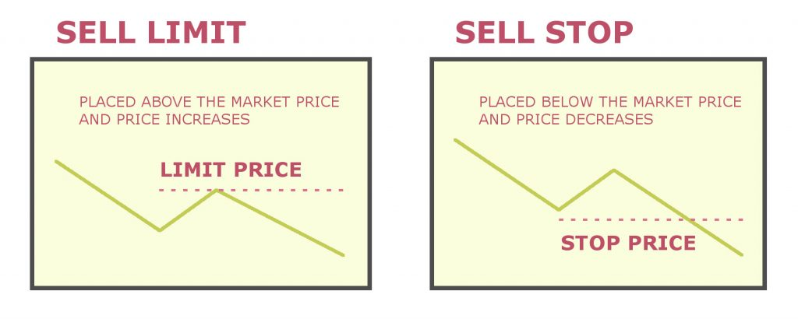

An Introduction to AirshipCraft
v2.1.0 | Documentation of the mechanics and vision of the server.
üìù Info: This document was last updated on 2023-03-07
⚠️ Warning: All information should be treated as current unless specifically told otherwise.
❓ Looking for user guides? Click here.
All information provided in this document is aimed at giving new and existing members of the development team some insight into what the AirshipCraft: Reborn (AC:R) project hopes to achieve. This document will describe every important element of the server, including its history, community, target audience, and previous issues that we have encountered in previous iterations. More importantly, the document will include suggestions as to how we can fix those issues, planned features, mechanics, and gameplay design.
This is a living document. All content regarding mechanics and gameplay is subject to change as the project progresses. New features will constantly be implemented and documented as they are developed.
See the changelog to see a list of features added/removed and/or updated.
This project utilizes SemVer for its versioning structure. The correct project version number should be displayed at the top of this page as well as at the top of the changelog.
⚠️ Warning: at the time of writing, the project is currently in major version 0, meaning there is no playable nor stable version as the project is still in its initial development stage.
A Brief History
This is the second iteration of AirshipCraft. The first iteration was produced by mjcrafter100 (now Grau_Wulf)'s original AirshipCraft in 2015. The vision for his server was little more than an SMP server inspired by Movecraft and Factions features, nothing else. Although simple, it was extremely popular and loved by many. As AirshipCraft evolved, the vision shifted to form a geopolitical server which would later be known as 'Total War'. The Total War series of Minecraft servers will continue to face its own iterations of changes, but the main focus was always some type of land-claiming plugin and Movecraft.
The early economy system was nothing more than a few chest shops found in random locations with different buy and sell prices to simulate different regional markets, encouraging players to travel around the map on “trade runs” to earn money. An archaic form of a “tech tree” was implemented, using server play time and permissions as a deciding factor in what weapons or equipment a player can access, which as you can imagine became quickly imbalanced.
AirshipCraft: Reborn (AC:R) is similar to the original AirshipCraft in that it has a heavy focus on Movecraft mechanics. However, that is where the similarities end.
Project Overview
This page will serve as an overview of the entire project. Topics which require more in-depth explanations and plans for their implementation will receive their own section. These sections can be found in the table of contents located on the left-hand side of this page.
Outline
The purpose of this project is to fulfil the vision of creating a "true" geopolitical experience in Minecraft. Although it is not based on an Earth map, the map is Earth-like enough to encourage the natural growth and creation of nation-states through either player or NPC manipulation. "Dynamic" is the key buzzword for this project.
The world, much like real-life, should feel fluid (constantly changing). The project will include dynamic market prices as a result of:
- Inflation
- Supply and demand patterns
- Wars and diplomatic actions by foreign nations
- Natural disasters
All examples listed above are features that this project will attempt to replicate in the virtual world.
A primary focus of this project is its concentration on NPCs, heavily involving them within embedded game mechanics. This is to keep gameplay constantly engaging for the end user to maximize their gameplay experience.
With NPC-controlled nation-states scattered across the map, there will always be something for the player to do. In theory, the server should be fun and playable even if the player is completely alone on the server.
The goal of the economy is to be player-driven. There should be enough incentive for players to acquire currency without there being too many obstacles in place which may serve as a potential deterrent for new players. Finding a good balance is difficult, but not impossible.
See Economy
We want to provide a server where realistic strategy, tactics, and creative thinking will allow players to get ahead. We want players to be able to own and control their own fully functioning and dynamic nations, towns and empires. We seek to find the balance between complexity and simplicity. Allowing for in-depth and complex mechanics but still being extremely player and 'noob friendly', providing a steep enough learning curve to separate the good players from the amateurs in a wider degree of aspects than just raw Minecraft skill.
Although AirshipCraft was never traditionally marketed as a “roleplay” server (and still technically isn’t), we are taking steps to emulate a form of “roleplay” environment to immerse players in this new world we are building. This includes the writing of lore, the creation of a quest system, player cards and other things that promote roleplay. Roleplay is highly encouraged but will not be enforced as it should be allowed to occur naturally.
Game Design
This project is designed with the mindset of building a game. The goal is to design and implement gameplay elements that foster player engagement and boost player retention. Although the server is designed so it can be fun without being populated, it's mutually beneficial for all parties if there is an established player base.
This graph outlines a player’s skill vs. difficulty:
Note: this shows three difficulty levels and how players react to them based on their skills. Also, note that the blue line enters all three boxes, which is important to get the most players interested in the gameplay.
By itself, this means nothing. However, combine it with this graph:

This shows that, in the median, player interest is tied to efficacy. In other words, the better you are at something, the more you’re interested. The interest rate drops according to standard deviations from the median difficulty line as shown in the first graphic.
The full meaning of both of these graphs isn't realized until we look at this next graph:
This graph shows that as you move across difficulty levels, you engage players. This implies you have a game that can watch a player’s reactions and scale difficulty based on their performance. The AI needs to constantly move between the optimal challenge line, and the blue line in the first graph. It is based on these assumptions:
- One cannot design a difficulty that is perfect for everyone.
- Therefore, we must move the player above and below the difficulty line using rewards.
- The best way to do this is to provide multiple reward types that cater to different styles of play.
Rather than categorize players as high-skill vs. low-skill, attenuate the game to make players feel highly skilled and low-skilled. Both levels serve a purpose, as graph 3 shows. Note that the stuff in the quotation marks in graph 3 are the negatives of this mode.
Given this, we think of the following as guiding principles:
- As players move above the optimal challenge line, they feel high satisfaction.
- Keep them there too long and they quickly devolve into more negative feelings about the play being ‘too easy’ or ‘childish’.
- As players move below the optimal challenge line, it leads to a high player effort to succeed.
- Here the positive emotions of challenge and excitement are balanced by the negative pitfalls of it being ‘too hard’ or ‘frustrating’. You can’t keep them here too long either.
- The key to successful engagement is to move players across this line using a rewards system that caters to both high satisfaction (ranks, levels, recognition, Right Brain motivators) and high effort (items, upgrades, bonuses, Left Brain motivators).
And finally, again:
- No two people are the same, so there is no true ‘optimal challenge line’. It is a construct used to understand from measurements when to make hurdles harder or easier based on individual player performance.
This is one way to deal with player engagement and create addiction. Great games closely adhere to the ‘Optimal Challenge Line’ as created by each player’s skill and use the Octalysis drivers to push players back and forth across the line.
Octalysis is a great breakdown of player motivations by Yu-Kai Chou. We can use the drivers here to motivate high-satisfaction and high-effort players, as each responds differently.
This is beautifully captured in this graphic:
The graph is a very good guide on what should be kept in mind when proceeding with the development of the server/project. We can, however, for the sake of simplicity, focus mainly on the key points of the graph.
- Progress:
- As players advance in the game, they should feel a sense of accomplishment. Clear objectives, like levelling up different skills or tech trees, unlocking new items or abilities, or things such as making the world more "exploration worthy" can help achieve this.
- Feedback:
- Players must receive immediate feedback on their actions, such as points earned or money earned, in order to improve gameplay and keep them engaged.
- Difficulty:
- The game should be challenging enough to be engaging without being too difficult to the point where players give up in frustration.
- Social:
- Replayability:
- The game should entice players to return and play it repeatedly. Randomly generated content, an immersive and dynamic world, and other event-like activities and objectives can help accomplish this.
A good storyline can engage players and make them want to keep playing to see what happens next. We aim to accomplish this by providing multiple quest lines that have benefits and impacts on the player who chooses to complete them and possibly (slight) drawbacks to those who don't, in order to gently nudge players to keep playing and trying different things.
Philosophy
It's important to maintain a commonly shared philosophy when designing or working on mechanics. The general mantra is to add quality of life (QOL) improvements to the player whenever possible. If we are able to streamline the boring, basic, vanilla mechanics and make it very easy, or in some cases automated, for the player, the player can focus on the unique, more interesting and "fun" mechanics we have designed for them.
If a player sits and has to mine or farm for resources manually for everything they need, then they will only spend about 1/4th or less of their time actually playing the game, since 3/4ths of it would be spent grinding. Try to limit unnecessary grinds.
Designing any sort of progression system or mechanic that requires players to put in the effort is good (as we have stated before in the previous section), however, there's a difference between challenging and time-consuming and we want to limit time-consuming whenever possible.
Purpose of These Docs
This documentation serves as a guide to potential/future developers who have graciously volunteered or have been brought on to the team to work on AirshipCraft.
Planned features which are outlined and explained in any of the subsections to the left of this page might include a note at the top of the page such as:
Currently unimplemented.
Implemented as of YYYY-MM-DD.
Currently being developed as of YYYY-MM-DD.
These notes give a sort of status indication of what features have been added, which are currently being worked on, and what features have not been implemented at all.
Written by:
Zeyad “zune” Rashed,
Head Developer and Project Manager
AirshipCraft
AirshipCraft: Reborn
Contact:
Website (Homepage)
Discord (Discord)
GitHub (GitHub Repo)
Changelog
All notable changes to this project will be documented in this file. This includes new features in-game, such as plugins or mechanics, changes to existing features, plugins, mechanics, or additions/removals to the backend or frontend of the website or databases involved in the project, as well as changes to this documentation.
The format is based on Keep a Changelog, and this project adheres to Semantic Versioning.
[v2.1.3] - 2023-04-25 -
[v2.1.2] - 2023-03-03 - 2023-03-07
Added
Changed
- Docs:
- Restructuring of certain sections:
- NPC
- Nodes
- Renamed
PlayerStats-> Datum
- Restructuring of certain sections:
Fixed
- Docs:
- Fixed incorrect page being displayed for PlayerStats
[v2.1.1] - 2023-1-24 - 2023-02-27
Added
- Docs:
Began writing of the project overview. (DONE!)- Added various economy related pages.
- Begun implementation of page tags such as "Unimplemented", "Implemented" and "Currently being developed".
- For now they are just text tags.
- Created new Misc. section.
- Currently includes "Lore" and "Quest" pages.
- Added "philosophy" section to the introduction page.
- Added page for land claiming.
- Added page explaining nodes.
- Page to explain the territories better.
- Explain using handles over IDs.
- Economy related pages:
- Cults page.
- Explanation of cult objects.
- Breakdown of Altars
- Explanation of Transmutations
- Player Stats page and diagram.
- Added a project timeline and associated pages:
- Phase 1.
- Housekeeping is meant to serve as a guideline to keep code uniform and encourage best practices to keep the project organized.
- Also added Coding Standard, Optimization and Commits
- Added a "Core" section discussing the core components that make up the backbone of the project.
- Common Library page outlining the framework and its functionality.
Changed
- Docs:
- Changed structure of the table of contents.
- Moved the Map section underneath the Mechanics section as it made more sense.
- Moved "Lore" page to no longer be nested underneath the Map section and instead moved under Misc.
- Moved "Claiming System" page to be nested under Nodes instead of its own section as it makes more sense.
- Moved "PlayerStats" to the core section as it makes more sense.
- Updated footer on first page.
- Fixed various small formatting errors .
- Updated contributions page.
- Changed
Administration->General Development- Better reflection of what the section is meant for.
- Changed structure of the table of contents.
Removed
- Docs:
- Removed Nation Objects page as it isn't necessary.
[v2.1.0] - 2023-1-2 - 2023-1-23
Added
-
Web:
- Seperate repositories for better version control via git.
- Created seperate repo to hold the documentation.
- Created seperate repo for homepage.
- Started work on
/craftviewerand/market.
- Seperate repositories for better version control via git.
-
Discord:
- In process of creating seperate Discord server exclusively for developmental purposes.
- Arya
- Creation of seperate repository for Arya's core module for better version controlling.
-
Server:
- Upgraded server hardware to 6 cores and 16 GB RAM.
- Set up
rdiff-backupin-order to periodically backup the map. - Pruned uneccesary/redundant testing environments.
-
Map:
-
Began work on "Port Xile" as well as plotting out the starting point for "Bettesville".
-
"Port Xile":
- Market area completed, needs polishing/decorating.
- Social area half finished, feels empty atm.
- Main fortress near complete needs interior/rooms.
- Residential area near complete, needs a few more blocks to fill out space, as well as creation of a "high end" district.
-
Changed
-
Misc:
- Fixed project version to display
v2instead ofv0.
- Fixed project version to display
-
Docs:
- Restructuring of the documentation.
- Creation of user guides.
- Began writing of the project overview.
Removed
-
Web:
- Documentation and homepage from main web repository, moved to seperate repo.
- Configured Dynmap.
- To use external webserver instead of the default internal webserver.
- Installed LiveAtlas UI.
- New link: https://airshipcraft.tk/map.
-
Discord:
- Moved
coremodule of Arya to seperate repository.
- Moved
Currently unimplemented.
Economy
Overview
The economy is a crucial point of the project/server. It builds the core of the overall gameplay design as it gives players a purpose. Building a good economic system within the game is a crucial step in setting the foundation for creating a positive feedback loop in the player's experience.
A good economy allows players to trade and exchange resources in order to progress or improve their gameplay experience. Our economic system aims to include elements such as supply and demand, inflation, and player-driven marketplaces. A good economic system should allow for player choice and strategy, as well as create opportunities for players to specialize in certain in-game activities. A balanced economy can prevent exploitation and provide fair opportunities for players to acquire resources.
A balanced economy can prevent exploitation by ensuring that there is a fair distribution of resources and opportunities for all players. This can be achieved through a variety of methods, such as setting limits on the number of resources that can be gathered or traded, or adjusting the costs of goods and services based on supply and demand; both methods we plan to implement.
Additionally, a balanced economy can prevent players from cornering the market on a particular resource, or charging exorbitant prices for goods or services, by placing caps on the prices that can be charged or by adjusting the availability of resources based on player actions.
If the economy is well designed, it will be easier for players and moderators to be able to detect suspicious activity that could be caused by player exploitation, as such, allowing for quicker patches.
See Market
Currency
A physical item currency will be implemented. Theoretically, we will be able to allow players to mint their own currencies and assign them value based on in-game factors to allow for currency exchanges and a more competitive economic ecosystem.
This will also allow for more complex actions and for more customizability and incentives to form things such as banks and companies.
Also, by implementing a physical item-based currency, it gives greater incentive to raiding, PvP, and wars.
Currently unimplemented.
Market
The market system is one of the key features of the entire project as it serves as the backbone of the economy. Caution must be used when designing, discussing, or working on features of the economy in general and the market system in particular. Measures need to be taken to ensure the system can not be gamed or at least the gaming of the system will be kept to a minimum. With a proper dynamic economy, we can avoid players finding METAs that break the economy.
Overview
There will be two parts to the market. The global and the local market.
The global market determines things on a server-wide scale, such as a price ceiling to set the default cost of items put on sale on the market if not specified by the user. It also creates an index on the webserver as a reference for players to be able to see a spreadsheet of the current market prices of items. The global market is meant to be a guideline to building the local markets but should not be limited to the end user in any real way.
The local market determines the prices and sale of goods on a region basis. Much like the global market, the local market sets price ceilings on items and uses the global market prices to set the maximum initial price on items. The local market also records how many unique vendors sell a certain item in that region and inversely raises the price ceiling to allow players a chance to be able to corner the market in that specific region.
The Global Market
The global market monitors the supply of items server-wide. Supply is the number of items submitted to chests connected to a vendor/merchant NPC. This keeps track of the global supply of items. As the supply increases, the global price cap lowers, which in turn will lower the global default initial pricing of items.
An initial price point is required due to the hyperbolic formula used in determining dynamic market prices. It would be impossible to buy any item if it reaches 0.
Inflation
The initial price point (after it is first configured by an Administrator via the configuration file) is affected by in-game inflation rates using the formula:
R = ((B - A)/A) x 100
Where A = starting cost; B = ending cost; R = inflation rate
How it works: It takes the pre-configured initial price point for an item (B) and after a month(?) compares it with the mean price point of that specific item across all of the registered local markets (A). The resulting rate (R) is then subtracted from the starting price point (A) and the new market month begins.
The Local Market (Per-region Markets)
The local market is where the really interesting part begins. The local market, like the global market sets an initial price on items based on two factors:
The first factor is the global market's initial price. The local market's initial price cap should always either equal or be less than the global market's.
By default, all items start in initial pricing mode. Initial pricing is a temporary price cap or ceiling that keeps prices low until a reasonable amount of the item has been sold to the shop. The price of an item will not change while it is in dynamic pricing mode.
Due to the nature of the pricing formula, an item with 0 stock has an infinite sell value when in dynamic pricing mode. Initial pricing is there to fix this issue. Tradeable objects will automatically switch to dynamic pricing mode whenever the dynamic price is less than the initial price.
Dynamic Pricing
The main purpose of this economic system is to allow for dynamic price changes in the server's economy in order to prevent stagnant gameplay and force players to constantly adapt to market prices instead of abusing a singular trading META.
Dynamic pricing mode will automatically be activated for all items once they reach a certain stock level. Once in dynamic mode, the price of the item will vary depending on how much stock is available for that item.
As the stock approaches 0, the price will approach infinity, and as the stock approaches infinity, the price will approach 0. This means that it is essentially impossible to purchase the final item in a shop whenever it is in dynamic pricing mode. The pricing formula is as follows:
price = (median * value) / stock.
Taxation
This economic system will allow for different forms of taxation. Taxes, by default, are deposited into the region's bank account unless an eligible bank account is found.
┌───────────────┐
│Collected Taxes│
└──────┬────────┘
│
│
│
▼
┌──────────────────────┐
│ │
│ Available town bank? │
│ │
└─────────┬────────────┘
│
│
▼
┌────────────────────────┐
│ │
│ Available nation bank? │
│ │
└──────────┬─────────────┘
│
│
│
▼
┌──────────────────────┐
│ │
│ Region bank account │
│ │
└──────────────────────┘
üìù Note: Here is a chart showing the priority hierarchy of where the taxes are deposited.
Tax rates default to whatever is defined in the config.yml to be the "global tax rate", but if a shop is within the territory of a town or nation and they have set its tax rate, then it will use that rate instead. If both the town and the nation set a tax rate, it would take the average of both numbers.
Purchase Tax
Purchase tax is applied when items are purchased in dynamic pricing mode. If the tax rate were 3%, the tax charged for the purchase would be 3% of the purchase price.
Initial Tax
Initial tax is applied when items are purchased in initial pricing mode. It works just like a purchase tax.
Enchantment Tax
Enchantment tax is applied when enchantments are purchased. Enchantment tax will apply to all enchantments unless they are in static pricing mode.
Dynamic Sales Tax
It allows poor players to make more money during sales than rich players. Dynamic tax will only be applied when the player's balance is between the money-floor and the money-cap defined in config.yml. The maximum tax rate defined in config.yml will be applied when the player's balance is equal to or greater than the money-cap. If the max tax is set to 100 percent the player will no longer make money when selling items to a server shop. At the money floor, no tax will be applied. Between the cap and floor, the tax rate will gradually increase as the player's balance approaches the money cap.
See also Banking, and the Nation System
Taxed Transaction
public interface TaxedTransaction extends EconomyTransaction {
/**
* Add a tax collector to this taxed transaction. The tax collector account receives the taxes from this
* transaction.
*
* @param taxCollector account to receive the taxes.
* @return taxed transaction with tax collector
*/
TaxedTransaction setCollectedBy(Account taxCollector);
/**
* Return the amount of taxes to be paid in this transaction.
*
* @return the amount of taxes to be paid in this transaction.
*/
double getTax();
}
Currently unimplemented.
Spreadsheet
The spreadsheet is essentially just a web application that hooks directly into the economy and works with the Market system.
Overview
Our goal is to build a dynamic website that displays the prices of items on a per-region and global basis. We want to hook the website directly into the server, so we can query the prices set for a specific item per region, as well as querying the global price of a specific item. The website should display all this information in a visually appealing format and update the prices in real-time, or at least once a day at a certain time.
To achieve this, we need to:
- Connect the website to the server
- Create an API within the Market plugin to retrieve price data
- Organize the data into a spreadsheet format
- Display the data on the website
- Implement real-time updates, or update the prices once a day at a certain time
Let's break these steps down further:
1. Connect the website to the server
We need to connect the website to the Minecraft server running AirshipCraft. Since Spigot's built-in API doesn't provide us with a way to directly communicate with a web server, we'll need to create our own API within the Market plugin.
Create an HTTP endpoint
We can create an HTTP endpoint in the Market plugin that handles incoming requests from the website. Here's some pseudocode that demonstrates how we might achieve this:
import org.bukkit.plugin.java.JavaPlugin;
import org.bukkit.Material;
import spark.*;
public class MarketPlugin extends JavaPlugin {
private static final int PORT = 8000;
private static final String API_PATH = "/api/market";
@Override
public void onEnable() {
Spark.port(PORT);
Spark.path(API_PATH, () -> {
Spark.get("/price/:item/:region", (req, res) -> {
String itemName = req.params("item");
String regionName = req.params("region");
double price = getPrice(itemName, regionName);
return Double.toString(price);
});
});
}
private double getPrice(Material itemName, String regionName) {
// Retrieve the price for the given item in the given region
// ...
return price;
}
private double getPrice(String itemName, String regionName) {
// Retrieve the price for the given item in the given region
// ...
return price;
}
}
This code creates an HTTP endpoint at localhost:8000/api/market/price/:item/:region. When a request is made to this endpoint, the getPrice() method is called, which retrieves the price for the given item in the given region using Spigot's API. The price is then returned as a string.
Set up a web server
We'll need to set up a web server that can handle HTTP requests from the website and communicate with the Market plugin's API.
Here's some pseudocode that demonstrates how we might achieve this using the Spark Java web framework:
import spark.*;
import com.google.gson.Gson;
public class SpreadsheetServer {
private static final String MARKET_API_URL = "http://localhost:8000/api/market";
private static final Gson gson = new Gson();
public static void main(String[] args) {
Spark.port(8080);
Spark.staticFileLocation("/public");
Spark.get("/price/:item/:region", (req, res) -> {
String itemName = req.params("item");
String regionName = req.params("region");
String url = MARKET_API_URL + "/price/" + itemName + "/" + regionName;
String priceString = HttpUtils.get(url);
double price = Double.parseDouble(priceString);
return gson.toJson(price);
});
}
}
This code sets up a web server on port 8080 that serves static files from the /public directory. When a request is made to /price/:item/:region, the server makes a request to the Market plugin's API to retrieve the price for the given item in the given region. The price is then returned as a JSON object.
Front-end integration
Certainly! After we have established a connection between the website and the server, we can move on to integrating the front end. The front end is responsible for displaying the data retrieved from the server in a user-friendly and visually appealing format.
To achieve this, we can use a front-end framework like React or Angular, which will provide us with the necessary tools to create a dynamic and responsive user interface. We can also use libraries like Chart.js or D3.js to create interactive data visualizations.
Here is some pseudocode for the front-end integration:
// Define the front-end application
public class SpreadsheetApplication extends Application {
// Initialize the application
public void init() {
// Connect to the server
connectToServer();
}
// Connect to the server
private void connectToServer() {
// Use AJAX to send an HTTP request to the server
XMLHttpRequest request = new XMLHttpRequest();
request.open("GET", "http://localhost:8080/prices");
request.onload = () -> {
if (request.status == 200) {
// Retrieve the price data from the response
String responseText = request.responseText;
JSONArray priceData = new JSONArray(responseText);
// Render the data on the page
renderSpreadsheet(priceData);
}
};
request.send();
}
// Render the spreadsheet on the page
private void renderSpreadsheet(JSONArray priceData) {
// Use React or Angular to render the data
// Use Chart.js or D3.js to create data visualizations
// Use CSS to style the page
// Use JavaScript to add interactivity
}
}
// Start the application
public static void main(String[] args) {
launch(args);
}
In this example, we use AJAX to send an HTTP request to the server and retrieve the price data in JSON format. We then use React or Angular to render the data on the page and use Chart.js or D3.js to create data visualizations. Finally, we use CSS to style the page and JavaScript to add interactivity.
This is just a high-level overview of the front-end integration process, but it should give you an idea of how we can create a dynamic and visually appealing user interface for our spreadsheet application.
Certainly! Here are some code examples for using React and Chart.js to render and visualize data on the front-end:
Rendering data with React
We can use React to create a dynamic user interface that updates in real-time as new data is received from the server. Here's an example of how we might use React to render a table of item prices:
import React, { useState, useEffect } from 'react';
import axios from 'axios';
function ItemPrices() {
const [prices, setPrices] = useState([]);
useEffect(() => {
axios.get('/api/prices')
.then(response => {
setPrices(response.data);
})
.catch(error => {
console.error(error);
});
}, []);
return (
<table>
<thead>
<tr>
<th>Item</th>
<th>Region</th>
<th>Price</th>
</tr>
</thead>
<tbody>
{prices.map((price, index) => (
<tr key={index}>
<td>{price.item}</td>
<td>{price.region}</td>
<td>{price.price}</td>
</tr>
))}
</tbody>
</table>
);
}
In this example, we use the useState and useEffect hooks to manage the state of the prices array. We make a GET request to the /api/prices endpoint to retrieve the latest prices from the server, and update the state with the response data. We then use the map function to render each item in the prices array as a table row.
Visualizing data with Chart.js
We can use Chart.js to create data visualizations that help users understand the trends and patterns in the data. Here's an example of how we might use Chart.js to create a line chart of item prices over time:
import React, { useState, useEffect } from 'react';
import axios from 'axios';
import { Line } from 'react-chartjs-2';
function PriceChart() {
const [data, setData] = useState({});
useEffect(() => {
axios.get('/api/prices')
.then(response => {
const labels = response.data.map(price => price.date);
const prices = response.data.map(price => price.price);
setData({
labels: labels,
datasets: [
{
label: 'Item Prices',
data: prices,
fill: false,
borderColor: 'rgb(75, 192, 192)',
tension: 0.1
}
]
});
})
.catch(error => {
console.error(error);
});
}, []);
return (
<Line data={data} />
);
}
In this example, we use the useState and useEffect hooks to manage the state of the data object. We make a GET request to the /api/prices endpoint to retrieve the latest prices from the server, and format the data as an object that can be consumed by Chart.js. We then pass the data object to the Line component, which renders a line chart with the item prices over time.
2. Create an API within the Market plugin to retrieve price data
We'll need to modify the Market plugin to expose an API that we can use to retrieve the prices of all the items in the game. We can do this by adding methods to the plugin that retrieve the prices for each item in each region. We'll need to store this data in a database or other data storage system so we can access it easily and organize it into a spreadsheet format.
3. Organize the data into a spreadsheet format
Once we have the price data, we'll need to organize it into a spreadsheet format. We can use a spreadsheet library or write our own code to organize the data into rows and columns. We'll also need to create a user interface for the website that displays this data in a visually appealing format.
4. Display the data on the website
We'll need to use HTML, CSS, and JavaScript to create the user interface for the website. We can use a front-end framework like React or Angular to help us create a dynamic and responsive user interface that updates in real-time.
5. Implement real-time updates, or update the prices once a day at a certain time
Finally, we'll need to implement real-time updates or schedule daily updates at a certain time. We can use WebSocket technology to implement real-time updates or set up a scheduled task that retrieves the latest price data once a day at a certain time.
Benefits of Implementation
Below is a list of benefits from designing and implementing a web app that dynamically displays historical market data such as buy and sell orders for the in-game economy:
-
Easy access to market information: Players will have easy access to real-time information about the prices of items in different regions, allowing them to make more informed decisions when buying or selling items.
-
Improved trading experience: With access to real-time market data, players can make more strategic trading decisions, leading to a more satisfying trading experience.
-
Increased player engagement: A dynamic website that displays market data can increase player engagement by encouraging them to participate in the in-game economy.
-
Promotion of player-to-player trading: By providing information on buy and sell orders, the website can encourage players to trade directly with each other, rather than relying solely on NPC vendors.
-
Market transparency: A dynamically updated market website can increase transparency in the economy by showing the current state of supply and demand for different items.
-
Facilitates market analysis: With access to detailed historical data, players and economists can conduct more detailed analysis of the in-game economy, leading to more advanced strategies and a deeper understanding of market dynamics.
-
Supports server administration: With a website that displays market data, server administrators can monitor the state of the economy and adjust game mechanics as needed to ensure a healthy and balanced economy.
Overall, a website that displays dynamic buy and sell information for the in-game market can greatly enhance the trading experience, encourage player engagement, increase market transparency, and support more advanced market analysis.
Other Notes
There are a few features that could be added to the web application to enhance the user experience and provide more value to the community:
-
Search Functionality: A search function that allows users to quickly find the items they're interested in can be a huge time saver. The search function could include filters to narrow down results based on the region, item name, or other criteria.
-
Historical Data: Providing historical data on price trends for each item in the game can help traders make more informed decisions. This data can be displayed using charts or graphs and can be made available for download in spreadsheet format.
-
Discord Integration: Integrating with Discord can help users stay up-to-date on the latest market trends. Combining this with a notification system that alerts users when prices for certain items drop below a certain threshold or reach a certain price can make the application a valuable tool for traders.
-
Mobile Optimization: With more and more people accessing the web on their mobile devices, it's important to ensure that the web application is optimized for mobile use. This can be achieved by using responsive design and ensuring that the website is compatible with a wide range of mobile devices.
Overall, these additional features can enhance the functionality and user experience of the web application and make it a valuable tool for traders in the AirshipCraft community.
Currently unimplemented.
Banking
Banking goes hand in hand with the Market system as it provides a method for storing players money. We already know from the class hierarchy that there exists player and non player accounts, but this banking system turns them into physical locations and not just hidden away as text in some database.
What Are Banks?
A bank is a financial institution licensed to receive deposits and make loans. There are several types of banks including retail, commercial, and investment banks. In most countries, banks are regulated by the national government or central bank.
The goal is to try and emulate this in game as well. Allowing for nations to create their own physical national banks tied directly to their economies, as well as providing the more established NPC nations their own banks as well that can give out loans and financially back and assist the player as a way for them to store their money there until their own nation becomes financially stable.
Bank Vaults
The main feature of banks is obviously their money storing capability and this is done through Vaults. Vaults are physical chests that players have inside the bank.
Bank vaults are registered with a chest with a sign placed upon it that reads "[Vault]". Upon right-clicking the sign, it will update to display the name of the player registered to that vault such as this:

Vaults can also be registered to other players by typing their names on the second line instead of leaving it blank.
Nations and settlements also require a vault in-order to store incoming taxes from taxed transactions as well as a way for settlements/nations to pay upkeep in-order to keep their claims from dissolving due to inactivity. To make a vault for a nation, the setup is very similar except the name of the settlement/nation must be printed on the second line.
Finally, Companies can also register their own vaults in-order to store profits prior to payday, a source of money in-order to pay off dividends, and as a sort-of shared bank account between trusted employees. To register a company vault, the setup is the same: Place a sign with [Vault] on the first line, the name of the company on the second line, and INC on the third line.
Bank Vaults and Balance
On most servers, a player can execute a command such as /bal or /balance in-order to view how much in-game currency they have. Since we already know that currency will be a physical item (See: Market), it will be hard (and very unwise) for players to carry all of their money in their inventory at all times.
Since bank vaults act as storage for a player's money they should also have some practicality outside of that by displaying the player's combined balance of both the currency in their posession and currency stored elsewhere.
An example of how this would look like in-game:
* player1 executed server command: /balance *
Chat:
[Balance] {inventory amount, I}
[Vault Balance] {stored vault amount, V}
[Total] {total balance, I + V}
We can look at Gringotts for an example of how they did it:
/**
* Current balance of this account in cents
*
* @return current balance of this account in cents
*/
public long getBalance() {
CompletableFuture<Long> cents = getCents();
CompletableFuture<Long> playerInv = countPlayerInventory();
CompletableFuture<Long> chestInv = countChestInventories();
// order of combination is important, because chestInv/playerInv might have to run on main thread
CompletableFuture<Long> f = chestInv
.thenCombine(playerInv, Long::sum)
.thenCombine(cents, Long::sum);
return getTimeout(f);
}
/**
* Current balance this account has in chest(s) in cents
*
* @return current balance this account has in chest(s) in cents
*/
public long getVaultBalance() {
return getTimeout(countChestInventories());
}
...
private CompletableFuture<Long> countChestInventories() {
Callable<Long> callMe = () -> {
Collection<AccountChest> chests = dao.retrieveChests(this);
long balance = 0;
for (AccountChest chest : chests) {
balance += chest.balance();
}
Optional<Player> playerOpt = playerOwner();
if (playerOpt.isPresent()) {
Player player = playerOpt.get();
if (Configuration.CONF.useVaultEnderChest && Permissions.USE_VAULT_ENDERCHEST.isAllowed(player)) {
balance += new AccountInventory(player.getEnderChest()).balance();
}
}
return balance;
};
return callSync(callMe);
}
Banks (Location)
This system also introduces a chunk plot called a Bank (can also be referred to as Bank Plot or Bank Chunk). Banks are registered when a Nation Vault is registered properly within the claims of that nation's capital.
This plot of land is special as it allows for nation leaders as well as those with the Banker permission to do things such as give out loans to a player.
Loans
Loan interest rate is configurable on a per town basis. Interest is compounded weekly.
In-order for a bank to give a loan, the bank must have that much money stored in a vault in-order to give it out. Once it is given out, the player who receives the loan will have that money transferred to their balance. After the due date for the loan is reached, whatever money in that player's physical vault with that bank will automatically go into paying for their debt.
If they were to have insufficient funds then that specific vault will have a negative balance and it will be reflected on their total balance. Players can choose simply not to pay back their loan but will still accrue interest until a Banker decides to "forgive" the loan.
Failure to pay off loans in a timely manner will decrease the player's credit score which will be viewable to anyone with the Banker permissions.
Minting Currencies
üìù Note: This section discusses allowing nations to mint their own currencies which can be exchanged following a global, "dynamic" exchange rate. This is a very complex mechanic and might be hard to implement so it might not be implemented or at least not fully implemented. HUGE WORK IN PROGRESS. Probably should just ignore this section until it gets more fleshed out.
Banks are also used as a means to mint currencies. This option will only be available to large nations (size is configurable) as a way to keep the economy from getting too chaotic.
Requirements to Mint Currency
There are a few requirements in-order for nations to mint their own currencies.
- Firstly is the size requirement as mentioned earlier; nations must be over a specific (configurable) size in-order to mint their own currency.
- Secondly is having
goldin the bank. This includes ingots as well as nuggets. Currencies must be backed by gold in the bank in-order to be valid. This allows for currencies to be exchanged.
When the prerequisites are met, nation leaders will able to run a command to register their currency with a name (string) and symbol (char). Once successfully created, the currency will be registered to the global economy. All currencies are backed by the value of the item gold. Exchange rates between different currencies will be generated based on a few factors which we will cover later.
Market stalls in any town/nation can be configured to accept any currency they choose that is registered globally. They can also choose to not accept certain currencies at any time of their choosing.
üìù Note: Since we are using physical item currencies and not a virtual account balance we can't use a base 10 number system since gold crafting recipes such as that for ingots and for gold blocks use 9 items, therefore it would be a base 9 system with gold nuggets being analogous to our parts of a whole (ingot) and blocks would be multiples of a whole.
Exchange Rates
Currency exchanges between different types of currencies is handled by the bank. When depositing currency to a bank, the bank automatically converts it into the gold equivalent. If a foreign currency is deposited, then that gold is taken out of the original nation's bank into the new one. For example:
- 1 newly minted currency ($NEW) is equivalent to 1 gold ingot.
- Over time, the value of $NEW depreciates to 6 gold nuggets.
- Player A deposits 10 $NEW into Bank of Nation B
- The Bank of Nation B converts 10 $NEW into ([10 * 6 = 60 nuggets]/9 = 6 ingots + 6 nuggets)
- Player A can then withdraw the money as either gold, $NEW or any other currency supported by that bank.
Currently unimplemented.
Companies
Overview
Companies are registerable entities that players can create, join, and manage. Companies allow players to enable profit-sharing between company owned stores as well as allowing other players, both inside and outside the company, to buy and sell stock in the company.
Players can only create or join one company at any time and can sell ownership of their company or transfer it to other players. CEOs (company owners) can invite other players to join their company.
If a player is already in a company and receives an invitation to join another company and that player accepts the invite, they will leave whatever company they are currently in and join the new company. If the invited player happens to be a CEO of a company then they will be prompted to either first transfer ownership or disband their company.
By introducing the concept of companies in our economy system, we can create a more diverse and dynamic in-game economy. Players can invest in companies and share in their profits, while companies can expand their reach and profitability by owning and operating in-game shops. We believe this mechanic will add a new level of depth and engagement to our server.
Registering a Company
To register a company, a player must have a certain amount of money in their account. We can set a minimum amount required to register a company, such as 100,000 in-game currency. Once the player has the required amount, they can run the following command to register a company:
/company register [company name] [ticker symbol] [optional: # of shares]
This command will create a new company with the specified name and ticker symbol and set the player as the owner, or CEO. The company's information will be stored in a separate database table from the player's information.
Notice the optional third argument which is the amount of shares offered as an initial public offering (IPO). Players can set whatever amount of shares they would like but the default value will always be 100,000.
In-order to maintain a company, a daily upkeep of 100 x 0.75(amount of members) will be withdrawn out of the company's bank. To check the balance of the company, you can do the following command:
/company bank
A company must also be registered to a physical location on the map. The physical location of the company is that company's HQ and it will determine the income tax rate come payday. CEOs must either purchase a plot from a nation or be given a plot by a nation leader.
You may also claim plots in the wilderness at a default cost. This allows for trade companies to be autonomous and to avoid paying income tax. Normal tax rates still apply to transactions done at any of the company owned markets.
A company must also have a physical bank vault.
Company Owned Shops and Profit Sharing
Once a company is registered, any shops registered to any of its members will automatically be registered to the company.
Revenue generated by the shops will be then deposited into the corporation bank.
There will be a "payday" daily and a percentage (90% by default) of the total contents of the corporation bank will be distributed equally among the members of the corporation. The CEO of the company can configure this percentage by running the following command:
/company payout [percentage]
The CEO can also withdraw the balance of the corporation bank at any time by running this command:
/company withdraw [amount]
The plugin will also keep track of the highest money makers within the company which can be viewed by running the command:
/company top [company name]
This will show which member of the company is bringing in the most revenue through the shops registered to them.
In the event that a member of the company who has shops registered to them is removed from the company, their shops are then unregistered from the company as well.
Stock Market
Companies have stock value that is determined by how well that company performs based on the following metrics:
- Size of the company: the amount of shops registered to the company.
- Weekly revenue of the company: the total weekly sum of the revenue made by the company through the buying and selling of goods via shops.
- Amount of shares available for purchase: As with the real world stock market, supply and demand plays a big role in determining the price of a stock.
Each company by default starts with 100,000 shares available to be bought. Anyone can purchase these stocks including company members. The starting price of a stock is
Buying and Selling Stocks
Buying
There are two ways for players to purchase stock in a company: buy limit orders and buy stop orders.
Buy limit orders are located below current price meaning they are filled at a designated price or better. Buy limit orders are designed for precision.
Buy stop orders are located above current price meaning they are filled at the best available market price. Buy stop orders are intended to enter or exit the market immediately upon being elected.
Players can place buy stop orders for stocks in registered companies using the following command:
/company buy [ticker symbol] [amount]
This command will purchase that amount of available shares at whatever asking price is available.
To place a limit buy order, you must use the following command:
/company limitbuy [ticker symbol] [amount] [limit price]
In this command we have the limit price which will set the target price for shares to be bought either at that price or lower in-order to fill the limit buy order.
Selling
Just like with buy orders, there are two ways to sell stock: sell limit orders and sell stop orders.
A sell limit is a pending order used to sell at the limit price or higher while a sell stop, which is also a pending order, is used to sell at the stop price or lower.
Sell limit is used to guarantee a profit by selling above the market price and sell stop is used to minimize loss by selling at the stop price.

Players can place sell stop orders for stocks they own by executing the following command:
/company sell [ticker symbol] [amount]
The amount parameter is the number of stocks the player wants to sell. By putting "all" instead of a number will place an order to sell all owned shares at the highest available bid price.
To place a limit sell order, you can use the following command:
/company limitsell [ticker symbol] [amount] [limit price]
Much like setting a buy limit order, the limit price parameter will set the asking price for the shares and will attempt to sell whatever specified amount of shares of a stock at that asking price or higher.
NPC Integration
Technical Overview
To begin with, we'll need to create a new entity class called Company. This class will have attributes such as name, owner, stockPrice, totalStock, sharesSold, shops, and profits. The shops attribute will be a list of all the shops owned by the company, and the profits attribute will be a map that associates each shop with its current profit.
public class Company {
private String name;
private UUID owner;
private double stockPrice;
private int totalStock;
private int sharesSold;
private List<Shop> shops;
private Map<Shop, Double> profits;
// constructor, getters, and setters
}
Next, we'll need to create methods for registering a new company, purchasing stock in a company, and sharing profits from company-owned shops.
public class CompanyManager {
private List<Company> companies = new ArrayList<>();
public void registerCompany(String name, UUID owner, double stockPrice, int totalStock) {
Company company = new Company(name, owner, stockPrice, totalStock, new ArrayList<>(), new HashMap<>());
companies.add(company);
}
public void purchaseStock(Player player, Company company, int numShares) {
double cost = numShares * company.getStockPrice();
if (player.getBalance() >= cost && company.getSharesSold() + numShares <= company.getTotalStock()) {
player.withdraw(cost);
company.setSharesSold(company.getSharesSold() + numShares);
double ownership = numShares / (double) company.getTotalStock();
company.getOwners().put(player.getUniqueId(), ownership);
}
}
public void shareProfits() {
for (Company company : companies) {
for (Shop shop : company.getShops()) {
double revenue = shop.getRevenue();
double profit = revenue - shop.getCost();
company.getProfits().put(shop, profit);
}
double totalProfit = company.getProfits().values().stream().mapToDouble(Double::doubleValue).sum();
for (Map.Entry<UUID, Double> entry : company.getOwners().entrySet()) {
Player player = Bukkit.getPlayer(entry.getKey());
if (player != null) {
double share = entry.getValue() * totalProfit;
player.deposit(share);
}
}
}
}
}
Finally, we'll need to hook into the main market plugin to make sure that company-owned shops are treated the same way as player-made shops. We can do this by adding a listener that listens for when a shop is created, and then adding that shop to the corresponding company's shops list.
public class ShopListener implements Listener {
private EconomySystem economySystem;
public ShopListener(EconomySystem economySystem) {
this.economySystem = economySystem;
}
@EventHandler
public void onShopCreate(ShopCreateEvent event) {
Player player = event.getPlayer();
Shop shop = event.getShop();
for (Company company : economySystem.getCompanies()) {
if (company.getOwner().equals(player.getUniqueId())) {
company.getShops().add(shop);
}
}
}
}
Commands
Currently unimplemented.
Resources
One of the main components of the project is augmenting resource distribution in order to promote trade as well as warfare. A good system of handling resource distribution and collection goes hand-in-hand with a good economy and claiming system.
See also Territories and Agriculture
Overview
By creating scarcity in Minecraft we pave the way for things such as civilizations, politics, and nation building.
Scarcity can be controlled in three ways:
- Ore distribution
- Crop growth rate and distribution
- Animal breeding and spawn rates
Manipulating crop growth and animal spawn rates affect the player directly as they create a food scarcity which will push them further to trade and/or travel to new areas.
Crops
⚠️ Warning: This page is deprecated, for all crop related changes please see Agriculture
Ores
By combining the Node's system of spawning ores with a bias algorithm, we can create a more realistic and immersive gameplay experience, as certain ores would be more abundant in certain regions and rare in others.
Overview
The HiddenOre system will also add an extra layer of excitement and challenge to the game, as players will have to explore and search for ores in hidden locations, rather than relying on the traditional method of mining. It will encourage players to be more adventurous and explorative, which will add more depth to the gameplay.
Overall, this hybrid system will make the economy more interesting and dynamic, and create a more realistic and immersive gameplay experience.
To start, let's discuss the current system used in phonon's nodes plugin. In this system, ores are spawned based on the type of node (such as a forest node or a mountain node) and the depth of the block being generated. This means that certain ores will only spawn in certain types of nodes, and at certain depths. However, this system can lead to a lack of scarcity in resources, as players can easily find all the ores they need within their own node.
To create a more realistic and challenging resource management system, we can add an algorithm that creates latitudinal and longitudinal biases in ore generation. This means that certain types of ores will be more common in certain areas of the map, and less common in others.
Here's how this could work in practice:
- Determine the dimensions of the map: We need to know the size of the map in order to properly generate ore distribution.
- Divide the map into sections: We can divide the map into sections based on latitudinal and longitudinal lines. For example, we could divide the map into a grid of 100x100 chunks. Each chunk would have its own ore distribution based on the algorithm we create. Fortunately enough, since we are using the Paralon map this part is already done for us.

- Generate ore biases: We can create an algorithm that generates biases for each type of ore in each chunk. These biases could be based on factors such as the distance from the equator or the distance from the center of the map. We could also take into account the type of biome or node present in each chunk.
for each chunk in the map:
for each ore type:
lat_bias = function(chunk.latitude)
long_bias = function(chunk.longitude)
biome_bias = function(chunk.biome)
depth_bias = function(block.depth)
total_bias = lat_bias * long_bias * biome_bias * depth_bias
set ore bias in chunk for ore type to total_bias
- Generate ore deposits: Using the biases we generated, we can then generate ore deposits within each chunk. We can use a system similar to Programmerdan's HiddenOre plugin to generate ore deposits that are hidden until a player uncovers them.
for each chunk in the map:
for each ore type:
ore_bias = get ore bias in chunk for ore type
for each block in the chunk:
if block is stone and random value < ore_bias:
generate ore deposit centered around block
hide ore deposit until player uncovers it
- Adjust ore respawn rates: To prevent players from simply moving from chunk to chunk to find all the ore they need, we can adjust the respawn rates of ore deposits based on the number of times they've been mined. For example, an ore deposit that has been mined 10 times might have a much slower respawn rate than a deposit that has only been mined once.
on ore deposit mined:
ore_deposit.times_mined++
ore_deposit.respawn_rate = base_respawn_rate * 1.5^ore_deposit.times_mined
With this system, players will need to explore different areas of the map in order to find all the resources they need. This adds an element of challenge and realism to the game, and encourages players to interact with each other to trade resources and form alliances.
Effect on Gameplay
The scarcity of resources will have a significant impact on the economy of the server. With ores being harder to find, players will have to work harder to obtain them, and this could result in an increase in the value of the ores in the market. This could lead to a more dynamic and complex economy, where the value of different ores fluctuates based on their scarcity.
It is important to balance the ore generation system so that it is not too difficult for players to find ores, but also not too easy. If it is too difficult, players may become frustrated and lose interest in mining altogether, and if it is too easy, it could lead to an overabundance of resources and hurt the economy. It may be useful to collect data on ore generation rates and adjust them as necessary to achieve a balance.
Another way to make the ore generation more interesting and challenging would be to modify the ore generation rates based on the biome. For example, ores could be more common in underground caves or mountains, but more scarce in forests or oceans. This could encourage players to explore different biomes to find the ores they need.
The scarcity of resources could also encourage players to work together and form communities to share resources and pool their efforts in mining. This could create a more collaborative and social environment on the server, where players are more likely to work together and help each other out.
Resource scarcity could also make gameplay more challenging and rewarding. Players may need to be more strategic in their mining efforts, and prioritize which ores to go after based on their rarity and value. This could lead to a more dynamic and interesting gameplay experience, where players have to think carefully about their actions and make strategic decisions.
Bias Algorithm
First, let's review what we're trying to accomplish with the bias algorithm. We want to modify the generation of ore blocks in Minecraft so that certain types of ore are more likely to generate in specific areas, while still maintaining a natural look and feel to the world. To achieve this, we'll need to analyze the terrain in each chunk and adjust the probability of different ore types generating based on certain factors, such as altitude, biome, and proximity to other types of blocks.
Here's a step-by-step breakdown of how we can implement the bias algorithm:
-
We'll start by defining a list of ore types that we want to bias. For example, we might want to bias the generation of diamonds, emeralds, and gold in certain areas.
-
Next, we'll need to create a method that calculates the probability of each ore type generating in a given block. This method will take in the coordinates of the block, as well as any relevant factors such as altitude, biome, and proximity to other blocks. It will output a value between 0 and 1, indicating the probability of the ore generating in that block.
Here's some pseudocode for this method:
public static double calculateOreProbability(int x, int y, int z, BlockType oreType) {
// calculate the base probability of the ore generating in this block
double baseProbability = 0.0;
if (oreType == BlockType.DIAMOND_ORE) {
// calculate the base probability for diamond ore based on altitude
baseProbability = calculateDiamondProbability(y);
} else if (oreType == BlockType.EMERALD_ORE) {
// calculate the base probability for emerald ore based on biome
Biome biome = getBiome(x, z);
baseProbability = calculateEmeraldProbability(biome);
} else if (oreType == BlockType.GOLD_ORE) {
// calculate the base probability for gold ore based on proximity to other blocks
baseProbability = calculateGoldProbability(x, y, z);
}
// apply any additional biases based on the surrounding blocks
double blockBias = calculateBlockBias(x, y, z, oreType);
double totalProbability = baseProbability * blockBias;
return totalProbability;
}
In this pseudocode, 'calculateDiamondProbability' would be a method that calculates the base probability of diamond ore generating in a block based on its Y coordinate, 'calculateEmeraldProbability' would calculate the probability of emerald ore generating based on the biome, and 'calculateGoldProbability' would calculate the probability of gold ore generating based on the proximity to other blocks.
- Once we have the probability of each ore type generating in each block, we'll need to modify the Minecraft world generation algorithm to take these probabilities into account. One way to do this would be to hook into the
ChunkGeneratorclass provided by the Spigot or Paper API, which is responsible for generating the terrain for each chunk.
The ChunkGenerator is responsible for generating the blocks in a chunk. In order to implement a bias algorithm for ore generation, we would need to create a custom ChunkGenerator that modifies the standard ore generation to bias the distribution of ores.
Here's a general outline of the steps we would need to take:
-
Create a new class that implements the ChunkGenerator interface. This will allow us to generate custom chunks.
-
Override the generateChunkData method. This is where we will modify the standard ore generation to implement our bias algorithm.
-
In the generateChunkData method, we will first call the standard ore generation code to generate the standard ore veins. We will then modify the ore distribution based on our bias algorithm.
-
To implement the bias algorithm, we will use a noise function to generate a value for each block in the chunk. We will then use this value to adjust the number of ore blocks that are placed in each chunk. The exact details of how we implement the noise function will depend on the specific bias algorithm we choose.
-
Once we have adjusted the ore distribution, we can generate the rest of the blocks in the chunk as usual.
Here's some pseudocode to give you an idea of what the implementation might look like:
public class CustomChunkGenerator implements ChunkGenerator {
// Standard ore generation settings
private final OreSettings oreSettings = new OreSettings();
@Override
public ChunkData generateChunkData(World world, Random random, int chunkX, int chunkZ, BiomeGrid biome) {
ChunkData chunkData = createChunkData(world);
// Generate standard ore veins
oreSettings.generate(chunkData, random, chunkX, chunkZ);
// Generate noise function for ore distribution bias
NoiseGenerator noiseGenerator = new PerlinNoiseGenerator(random.nextLong(), 3, 0.5, 0.5);
// Adjust ore distribution based on noise function
for (int x = 0; x < 16; x++) {
for (int y = 0; y < 256; y++) {
for (int z = 0; z < 16; z++) {
double noiseValue = noiseGenerator.getValue((chunkX * 16 + x) / 16.0, y / 256.0, (chunkZ * 16 + z) / 16.0);
if (noiseValue > 0) {
// Increase ore distribution
int count = chunkData.getBlockTypeId(x, y, z) == Material.STONE.getId() ? 2 : 0;
chunkData.setBlock(x, y, z, Material.DIAMOND_ORE);
for (int i = 0; i < count; i++) {
int offsetX = random.nextInt(3) - 1;
int offsetY = random.nextInt(3) - 1;
int offsetZ = random.nextInt(3) - 1;
int newX = x + offsetX;
int newY = y + offsetY;
int newZ = z + offsetZ;
if (chunkData.getBlockTypeId(newX, newY, newZ) == Material.STONE.getId()) {
chunkData.setBlock(newX, newY, newZ, Material.DIAMOND_ORE);
}
}
} else if (noiseValue < 0) {
// Decrease ore distribution
if (chunkData.getBlockTypeId(x, y, z) == Material.DIAMOND_ORE.getId()) {
chunkData.setBlock(x, y, z, Material.STONE);
}
}
}
}
}
}
}
Here's some pseudocode for a possible implementation of the bias algorithm:
// Define the parameters for generating biases
double latRange = mapDimensions.latMax - mapDimensions.latMin;
double longRange = mapDimensions.longMax - mapDimensions.longMin;
double centerLat = (mapDimensions.latMax + mapDimensions.latMin) / 2.0;
double centerLong = (mapDimensions.longMax + mapDimensions.longMin) / 2.0;
double maxBias = 2.0; // This is the maximum possible bias value for an ore type
// Loop through each chunk on the map
for (Chunk chunk : map.getChunks()) {
// Calculate the latitudinal and longitudinal biases for this chunk
double latBias = Math.sin((chunk.getCenter().getLatitude() - centerLat) * Math.PI / latRange);
double longBias = Math.sin((chunk.getCenter().getLongitude() - centerLong) * Math.PI / longRange);
// Calculate the biome bias for this chunk
Biome biome = chunk.getBiome();
double biomeBias = getBiomeBias(biome);
// Loop through each ore type and calculate its total bias for this chunk
for (OreType oreType : OreType.values()) {
double depthBias = getDepthBias(chunk.getDepth(), oreType);
double totalBias = latBias * longBias * biomeBias * depthBias * maxBias;
chunk.setOreBias(oreType, totalBias);
}
}
This pseudocode calculates the latitudinal and longitudinal biases for each chunk on the map, based on their distance from the center of the map. It then calculates the biome bias for each chunk, based on the type of biome it's in, and the depth bias for each ore type at that depth.
Finally, it calculates the total bias for each ore type in each chunk by multiplying these biases together, and sets the ore bias value for that ore type in that chunk. This value will be used later when generating ore deposits within the chunk.
To elaborate, the pseudocode sets up the parameters for generating biases. latRange and longRange represent the difference between the maximum and minimum latitude and longitude values for the map, while centerLat and centerLong represent the latitude and longitude of the center of the map. These values are used to calculate the latitudinal and longitudinal biases for each chunk, based on their distance from the center of the map.
The maxBias value represents the maximum possible bias value for an ore type. This value is used to ensure that biases are normalized and fall within a specific range.
Next, the pseudocode loops through each chunk on the map and calculates its latitudinal and longitudinal biases using the formula: Math.sin((chunk.getCenter().getLatitude() - centerLat) * Math.PI / latRange) and Math.sin((chunk.getCenter().getLongitude() - centerLong) * Math.PI / longRange). These values are used to reflect the position of the chunk relative to the center of the map.
The pseudocode then calculates the biome bias for each chunk using the getBiomeBias function, which takes the chunk's biome as input and returns a bias value. Biome biases allow us to generate different types of ores in different biomes, depending on the environmental conditions and resources available.
After calculating the biome bias, the pseudocode loops through each ore type and calculates its total bias for this chunk. The depth bias for each ore type is determined using the getDepthBias function, which takes the depth of the chunk and the ore type as inputs and returns a bias value. Multiplying the latitudinal, longitudinal, biome, depth, and maximum biases together yields the total bias value for that ore type in that chunk.
Finally, the pseudocode sets the ore bias value for that ore type in that chunk using the chunk.setOreBias method. These ore biases will be used later when generating ore deposits within the chunk. By using bias algorithms, the ore generation process is made more dynamic and realistic, and can be customized to suit the specific needs of the game.
Here's an example implementation of a custom chunk generator that incorporates the ore bias algorithm:
public class CustomChunkGenerator extends ChunkGenerator {
private final MapDimensions mapDimensions;
private final double latRange;
private final double longRange;
private final double centerLat;
private final double centerLong;
private final double maxBias = 2.0;
public CustomChunkGenerator(MapDimensions mapDimensions) {
this.mapDimensions = mapDimensions;
this.latRange = mapDimensions.latMax - mapDimensions.latMin;
this.longRange = mapDimensions.longMax - mapDimensions.longMin;
this.centerLat = (mapDimensions.latMax + mapDimensions.latMin) / 2.0;
this.centerLong = (mapDimensions.longMax + mapDimensions.longMin) / 2.0;
}
@Override
public ChunkData generateChunkData(World world, Random random, int chunkX, int chunkZ, BiomeGrid biome) {
ChunkData chunkData = createChunkData(world);
// Calculate the latitudinal and longitudinal biases for this chunk
double latBias = Math.sin((chunkX * 16 + 8 - centerLat) * Math.PI / latRange);
double longBias = Math.sin((chunkZ * 16 + 8 - centerLong) * Math.PI / longRange);
// Loop through each ore type and calculate its total bias for this chunk
for (OreType oreType : OreType.values()) {
double depthBias = getDepthBias(chunkData.getMinHeight(), oreType);
double biomeBias = getBiomeBias(biome.getBiome(8, 8));
double totalBias = latBias * longBias * biomeBias * depthBias * maxBias;
// Set the ore bias for this ore type in this chunk
chunkData.setRegion(
0, oreType.ordinal(), 0,
16, oreType.getMaxHeight() - oreType.getMinHeight() + 1, 16,
new MaterialData(oreType.getMaterial()),
new double[16][oreType.getMaxHeight() - oreType.getMinHeight() + 1][16]
);
chunkData.setRegion(
0, oreType.ordinal(), 0,
16, oreType.getMaxHeight() - oreType.getMinHeight() + 1, 16,
null,
new double[16][oreType.getMaxHeight() - oreType.getMinHeight() + 1][16]
);
chunkData.setRegion(
0, oreType.ordinal(), 0,
16, oreType.getMaxHeight() - oreType.getMinHeight() + 1, 16,
null,
new double[16][oreType.getMaxHeight() - oreType.getMinHeight() + 1][16]
);
chunkData.setRegion(
0, oreType.ordinal(), 0,
16, oreType.getMaxHeight() - oreType.getMinHeight() + 1, 16,
null,
new double[16][oreType.getMaxHeight() - oreType.getMinHeight() + 1][16]
);
// Set the ore bias for this ore type in this chunk
for (int x = 0; x < 16; x++) {
for (int z = 0; z < 16; z++) {
for (int y = oreType.getMinHeight(); y <= oreType.getMaxHeight(); y++) {
chunkData.setBlock(
x, y, z,
oreType.getMaterial(),
new double[]{totalBias}
);
}
}
}
}
return chunkData
}
}
API
The API portion of the Market system is used to hook all of the subsequent mechanics such as but not limited to the Cults system, Nations system, and the Quests system.
The Market API acts as an intermediary between consumer and provider plugins on the server, by allowing them to easily hook together using our API.
Provider plugins are those which offer a service within the server. Example providers would be something such as LuckPerms (permissions), TheNewEconomy (economy), and VentureChat (chat). Consumer plugins are those which utilize a provider plugin, such as JobsReborn (economy consumer).
Why not use [insert name here] economy plugin?
There are various economy APIs already on the market such as Vault and, recently, Treasury (which we have been influenced heavily by) however these APIs are designed for wide use by the public. Therefore they are designed to fill a wide range of general purposes without any specialization for more niche or specific specialized use cases such as those that may arise with the nature of something like this project.
Vault served as (and currently still serving as) the leading Economy API for more than a decade now. However, that plugin hasn't been updated for the past several years besides simple maintenance updates and introduces no new features. It provides no support for something such as multiple currencies (i.e. John has 9 coins and 4 tokens), transactional history, more verbose economy responses (Vault simply states that a transaction has failed without providing a reason as to why it failed), or even transaction events.
Treasury is a more recent API that hit the market at the start of 2022 and is (at the time of writing this page) currently going through a massive rewrite that has resulted in it being mostly unusable in its current state. However, it addresses a lot of the issues with Vault that were listed above. Our API is modeled heavily after Treasury which is reflected in the proposed hierarchy.
Gringotts, although not marketted as a standalone Economy API, does have functionality to act as one. It is the first (and iirc only) publically available plugin to use the concept of physical items translated into currency. We can use their repository as reference when building our system as their system is proven to work.
HyperConomy is the last plugin on this list that provides a decent API and infact already had a way of creating per-region markets as well as dynamic price changing. Our system is modeled similar to theirs in that aspect but HyperConomy suffered from countless bugs, was abandoned by its developers, and wasn't very user or server operator friendly. That being said, the concept was great and we can learn a lot from them and their shortcomings. You can consider our Market system as an upgraded, more refined version of HyperConomy.
Integration
The main benefit of creating an Economy API from scratch is complete control over what goes into it. The goal of the API is to integrate seamlessly with projects such as Nodes for example.
Class Hierarchy
- java.lang.Object
- java.util.AbstractCollection
(implements java.util.Collection ) - java.util.AbstractList
(implements java.util.List ) - java.util.AbstractSequentialList
- java.util.LinkedList
(implements java.lang.Cloneable, java.util.Deque , java.util.List , java.io.Serializable - tk.airshipcraft.market.api.common.misc.SortedList
- tk.airshipcraft.market.api.common.misc.SortedList
- java.util.LinkedList
- java.util.AbstractSequentialList
- java.util.AbstractList
- java.util.AbstractCollection
- tk.airshipcraft.market.api.economy.events.AccountTransactionEvent (implements tk.airshipcraft.market.api.common.event.Cancellable)
- tk.airshipcraft.market.api.economy.events.NonPlayerAccountTransactionEvent
- tk.airshipcraft.market.api.economy.events.PlayerAccountTransactionEvent
- tk.airshipcraft.market.api.common.event.Completion
- tk.airshipcraft.market.api.economy.transaction.EconomyTransaction
- tk.airshipcraft.market.api.economy.transaction.TaxedTransaction (extends tk.airshipcraft.market.api.economy.transaction.EconomyTransaction)
- tk.airshipcraft.market.api.economy.transaction.EconomyTransaction.Builder
- tk.airshipcraft.market.api.common.event.EventBus.EventSubscriberBuilder
- tk.airshipcraft.market.api.common.event.EventSubscriber
(implements java.lang.Comparable ) - tk.airshipcraft.market.api.common.event.SimpleEventSubscriber
- tk.airshipcraft.market.api.common.event.SimpleEventSubscriber
- tk.airshipcraft.market.api.common.event.FireCompletion
- tk.airshipcraft.market.api.common.misc.FutureHelper
- tk.airshipcraft.market.api.common.service.Service
(implements java.lang.Comparable , java.util.function.Supplier ) - tk.airshipcraft.market.api.common.service.event.ServiceRegisteredEvent
- tk.airshipcraft.market.api.common.service.event.ServiceUnregisteredEvent
- java.lang.Throwable (implements java.io.Serializable)
- java.lang.Exception
- tk.airshipcraft.market.api.common.response.TreasuryException
- tk.airshipcraft.market.api.economy.response.EconomyException
- tk.airshipcraft.market.api.common.response.TreasuryException
- java.lang.Exception
Interface Hierarchy
- tk.airshipcraft.market.api.economy.account.Account
- tk.airshipcraft.market.api.economy.account.NonPlayerAccount
- tk.airshipcraft.market.api.economy.account.PlayerAccount
- tk.airshipcraft.market.api.common.event.Cancellable
- tk.airshipcraft.market.api.economy.currency.Currency
- tk.airshipcraft.market.api.economy.EconomyProvider
- tk.airshipcraft.market.api.economy.transaction.EconomyTransactionInitiator
- tk.airshipcraft.market.api.common.response.FailureReason
- tk.airshipcraft.market.api.common.response.Subscriber<T,E>
- tk.airshipcraft.market.api.economy.response.EconomySubscriber
- tk.airshipcraft.market.api.economy.response.EconomySubscriber
Enum Hierarchy
- java.lang.Object
- java.lang.Enum
(implements java.lang.Comparable , java.lang.constant.Constable, java.io.Serializable) - tk.airshipcraft.market.api.economy.account.AccountPermission
- tk.airshipcraft.market.api.economy.misc.EconomyAPIVersion
- tk.airshipcraft.market.api.economy.response.EconomyFailureReason (implements tk.airshipcraft.market.api.common.response.FailureReason)
- tk.airshipcraft.market.api.economy.transaction.EconomyTransactionImportance
- tk.airshipcraft.market.api.economy.transaction.EconomyTransactionInitiator.Type
- tk.airshipcraft.market.api.economy.transaction.EconomyTransactionType
- tk.airshipcraft.market.api.common.event.EventBus
- tk.airshipcraft.market.api.common.event.EventPriority
- tk.airshipcraft.market.api.economy.misc.OptionalEconomyApiFeature
- tk.airshipcraft.market.api.common.service.ServicePriority
- tk.airshipcraft.market.api.common.service.ServiceRegistry
- tk.airshipcraft.market.api.common.misc.TriState
- java.lang.Enum
NPCs
Combat
Authors: Locutusque and SupremeNoob
Massive overhaul to how combat will be handled on the server. Throws default vanilla META out the window and instead introduces a robust new system.
A frankenstein monster I have created taking inspiration from various games. Transmutations are not mentioned too much but should go fine with the proposal.
- SupremeNoob
Damage Types
In-order to differentiate armor types an weapon types and to make each one unique in its own way, we will be introducing different damage types. Each different damage type can be countered by something else so it adds a fun and interesting layer to combat especially since you can set up your loadout depending on the kind of item "synergy" you want.
See Damage Types for a list of all damage types.
Protection, Speed and Penetration
Protection
Each type of armor will give different protection depending on the toughness of the armor in vanilla. (The detailed numbers are yet to be determined.)
- The higher the toughness, the higher your protection becomes, and the slower you will move
- Protection, speed and penetration are all percentage numbers
- The base speed of a player will be increased to make sure that having heavy armor doesn't slow the player down too much/ does not go lower than vanilla movement speed.
Penetration
Unprotected damage = 100% + ( (Penetration - Protection)
Unprotected damage will not go high than 100% and lower than 0%
For example, leather boots give you 10% protection, iron pants give you 30%, diamond chestplate gives you 60%, netherite helmets give you 40%.
Total of protection = 10% + 30% + 60% + 40% = 140%
If you are being hit with a penetration value of 30%:
Unprotected damage = 100% + 30% - 140% = -10% = 0%
If you are being hit with a penetration value of 150%:
Unprotected damage = 100% + 150% - 140% = 110% = 100%
Weapons will have their own penetration value for each of their moves, affected by the artifact modifiers.
Heavy attacks will grant the weapon an extra 50% (affected by the artifact modifiers) penetration, while light attacks will have bonus on penetration (also affected by the artifact modifiers).
Speed
Speed currently only affects movement. If the movement speed is not enough to dodge entities’ attack and speed builds turn out too weak, a dodge and accuracy mechanic can be implemented, but that is to be determined.
Weapon Total Damage Calculation
Here we will discuss how damage will be calculated.
Critical Hit
All weapons will have a base crit chance of 5% and a base crit damage of 200%
This can be increased with artifact modifiers.
Total Damage
Weapon Total Damage =
( (Base Damage * Special Damage %) + Bonus from Transmutations) * Crit * Unprotected Damage
Note for clarity: Critical damage is only factored in on a critical hit. "Special Damage" refers to the damage from a weapon's special move.
Damage Composition
The damage composition is affected by element convert value, which is a percentage (0% - 100%).
After calculating the weapon total damage, it will split into two:
- Physical damage = Weapon total damage * (1 - Element convert value)
- Elemental damage = Weapon total damage * Element convert value
Damage Weakness
The final damage is affected by how weak the entity is to the damage type.
Weakness will be a percentage:
- At 100%, the entity will take full damage
- At 200%, the entity will take double damage
- At 50%, the entity will take half damage
- At -100%, the entity will be healed using the full damage value
Final Damage Calculation
Final Damage = (Physical damage * Damage Type Weakness) + (Elemental damage * Damage Type Weakness)
Status Effects
Status effects will have a chance to proc, which depends on the damage composition of the weapon.
Proc chance = Element convert value
Proc damage = Weapon base damage * Weapon proc damage * Damage Type Weakness
Weapon proc damage will have base percentage of 5%, which can be increased with artifact modifier.
Final Thoughts
This proposal will massively increase the scope of the project. Expect ~8-12 artifacts (4 x 8 or 4 x 12 = 32 or 48 moves) or less at launch. More people can join to help make more artifacts, but it will also increase the balancing work.
See Artifacts
Movecraft
Damage Types
-
Physical (Basic damage)
- Status effect
- None
- Represents
- Slashing, piercing, bludgeoning
- Status effect
-
Heat
- Status effect
- Melt (Useful against entities with high armor)
- Decrease enemy defense
- DoT
- Melt (Useful against entities with high armor)
- Represents
- Radiation
- Radiant
- Fire
- Status effect
-
Cold
- Status effect
- Freeze (Useful for slowing down entities with high speed)
- Increase weapons cooldown
- Decrease swing speed
- Slow movement speed
- DoT
- Freeze (Useful for slowing down entities with high speed)
- Represents
- Freezing
- Status effect
-
Electricity
- Status effect
- Shock (Useful for clearing hordes of enemies)
- Take DoT, each time spreads the damage to a random nearby enemy
- Shock (Useful for clearing hordes of enemies)
- Represents
- Shocking
- Status effect
-
Necrotic
- Status effect
- Rot (Useful for debuffing entities in general)
- DoT
- Increase enemy’s damage intake
- Rot (Useful for debuffing entities in general)
- Represents
- Disease
- Poison
- Corrosion
- Radiation
- Status effect
-
Natural damage
- Any damage type from minecraft I haven't thought of
- Fall damage
- $etc...$
- Any damage type from minecraft I haven't thought of
(Damage over time (DoT) will be using the weapon's base damage as a reference.)
Artifacts
Authors: Locutusque and SupremeNoob
See Artifact List for a full list of items with descriptions.
Artifacts are special items on this server, in the form of weapons or armor. The weapon could be a sword, an axe, a bow, a gun (musket/rifle), a wand, etc, while the armors are randomly generated.
The damage type of the weapons can be switched by the players. Changing the projectile color/block in the process.
Players are limited to equipping/attuning 2 artifacts.
Weapons Design Philosophy:
Each weapons will be given 4 types of moves, each triggered with left clicks, shift left clicks, right clicks and shift right clicks.
For a melee artifact:
- Left click: Light melee attack
- Shift left click: Heavy melee attack
- Right click: Movement/defense utilities
- Shift right click: Special move
For a
rangeartifact: - Left click: Movement/defense utilities
- Shift left click: Special move
- Right click: Light ranged attack
- Shift right click: Heavy range attack
For a
magicartifact: - Left click: Light spell attack
- Shift left click: Heavy spell attack
- Right click: Movement/defense utilities
-Shift right click: Special attack
For a
hybridartifact: - Left click: Light melee/ranged/spell attack
- Shift left click: Heavy melee/ranged/spell attack
- Right click: Movement/defense utilities
- Shift right click: Special attack
For melee/magic/hybrid weapons, light and heavy attacks are mostly on left click and right click respectively. These are switched with right click and shift right click with range weapons (Bows/Crossbows)
Each move will give a cooldown (CD) for the weapons. No other moves can be used if the cooldown is not over.
To perform a special move, the player needs to fulfill some special requirement. Before using the special move, the weapons may need to:
- Be charged with left clicking
- Hit an enemy with 3 light/heavy attack
- $etc...$
Damage of each move
The damage of each move will be represented with percentage, here is 4 moves for example:
- Left click: Triggers a light melee attack that deals 70%
- Shift left click: Triggers a heavy melee attack that deals 150% damage
- Right click: Triggers a short leap (Deals no damage)
- Shift right click: Shoot a projectile that deals 250% damage
If the base damage of the weapon is 10, the moves would respectively deal:
- 10 * 70% = 7 damage
- 10 * 150% = 15 damage
- No damage
- 10 * 250% = 25 damage
Artifact Modifier
Each artifact will have their base stats, but also come with 1 - 3 random modifiers that gives buff to the player/item:
- Buffs:
- Decreased Heavy attack cooldown
- Increased multishot
- Increased heat damage
- $etc...$
But with more than one buffs comes debuffs, it could be a single massive debuff or multiple small debuffs:
- Debuffs:
- Decreased Heavy attack damage
- Decreased range
- Increase cold weakness
- $etc...$
The armor modifier and the weapon modifier will stack together.
Weapon Element
Weapons will have a randomly applied element to it. It will also have an element convert value attached to it (0% to 100%). This will affect how much of the damage is converted into the element of the artifact as well as the status effect proc chance.
See also [Damage Composition] and [Status Effect].
Player Progression
Player progression is an important core concept of the project as outlined on the introductory pages.
Obtaining Items:
There shall be ruins and dungeons scattered across the map. Inside these structures are chests, and inside these chests are armor/weapons/riches.
Dungeons are to be determined, but here is my suggestion for ruins:
- Players explore the map for ruins
- Players could start a raid on the ruins by entering it
- Custom mobs starts spawning as soon as the raid begins
- Players can crack open a chest by clicking it, but have to stay for a certain period of time until it opens, spawn rate increases
- Players can leave the ruins to end the raid at any time
Deconstructing items:
Weapons and armor can be deconstructed into predefined/random materials:
- Iron
- Diamonds
- Redstone
- Bones
- Other tradable items... $etc...$
This will get rid of the players’ unwanted artifact and grant them resources, but also give an artifact component that can be used to reroll artifacts.
Modifying items
Artifacts can be rerolled with artifact components. Changing its modifiers into another group of random modifiers.
Players can also use artifact components to reroll the element to get a more ideal element or damage composition.
Gameplay Loop
This proposal can create a gameplay loop in which:
- Players look for cheap cargos to buy.
- Players leave on an airship and head to a destination city
- On the way players can look for ruins/dungeon on the ground
- Raid the ruins for items
- Extract with the goods via their airship
- Arrive at the destination city and sell the cargos
- Deconstruct the unwanted items and equip their new items/reroll their old items
- Repeat
Could be a little bit of a grind but I highly recommend having this system (+ transmutations) instead of a regular leveling system since having level difference can have a massive balancing issue in a server that simulates geo politics. This way, players can at least get combat ready gears in a short time, only to grind for combat optimized gear when they are ready.
To reduce the grind, we can introduce these mechanic:
- During reroll, we can allow players to keep the original modifiers after rerolling.
- While opening a chest in raid, we can allow players to choose if they want helmets, chestplate, pants, boots or a weapon.
Problem
It could be little to no time before the market is saturated with artifacts, therefore we might need to:
- Force the players to store the artifact in a special storage, limiting the number of artifacts a player can have
- The number of artifact slots can be scaled with how many items we have implemented in total
- Instead of giving the artifacts straight away, give an “artifact token” instead, players will go back to town and trade the token for a random artifact (Others can kill the player to take the token for themselves)
- If a player runs out of artifact slots, they can choose to immediately deconstruct either the new item or an old item they have.
With these mechanics, we should be able to allow free trading between players with artifacts. Of course, the most ideal situation is that we have enough variety for artifacts to not be saturated easily.
Alternatively, we can do this instead:
- Artifacts can have custom durability abd can only regain a certain amount by sacrificing the same type of artifact
- Reaching 0 durability will not break the item, only making it temporarily unusable
- This can have a constant drain on artifacts, creating a demand in the market
This would create artifact merchants within the player base and there should be no need to limit the number of artifacts a player can have.
Artifacts
Skills
Currently being developed as of 2023-01-28.
⚠️ Warning: This page is still under construction!
Cults
The purpose of the cults plugin is to provide another layer to gameplay. By allowing players to be creative in creating these fictitious sects and design their own ideologies within the confines of the server, we open up avenues for player creativity and roleplay opportunities. As we have discussed in the introductory pages of this documentation, increasing player engagement is one of our main goals in designing this project.
Overview
The proposed plan for the cult's system has many moving parts to it. This page was written in hopes to clarify the vision for the plugin and its integration within the project, including how it will interact with the other plugins/mechanics of the server. Each feature and mechanic of the plugin will be broken down further on this page and subsequent pages within this section.
üìù Note: The terms "deity" and "god" are also interchangeable, as there is no difference between the two terms besides semantics. God and deity are synonymous. According to their basic definitions, they both represent a supreme power. However, sometimes God as a term is used to represent the only supreme power, whereas deity can be used to refer to any of the forms of this supreme power and thus, can be multiple in number. God is generally used in the context of male gods, whereas deity can be used to refer to both god and goddess (female god).
The following is a quick ten-point summary of the plugin:
- A player creates an altar in-order to pray to a deity.
- If the deity doesn't exist, then a new religion (cult) is formed and that deity is registered, and the player who created the altar becomes the head priest for that cult.
- If another player "prays" to that altar and they do not belong to a cult yet, they will join that cult and become a follower of that deity they just prayed to.
- A "pantheon" can be created, which is essentially a grouping of different cults/deities together. Members within a cult who are also part of a pantheon can pray to other deities within the pantheon.5. The opposite holds true, and cults can label other cults as "enemies" or "heretics", making their deities forbidden to their worshippers.
- As time goes on and the cult gains more of a following, head priests gain more power and can set laws for their religion, called "canon".
- Canon laws can include things such as what kind of actions are forbidden by their followers, such as food that is forbidden or actions that are encouraged, e.g. killing.
- Followers of the cult can lose or gain favor with their god/deity.
- Head priests can appoint fellow worshipers as priests.
- Head priests and priests can pray to their deity for "miracles" or to place "curses".
This summary, although crude, is the simplest explanation of the plugin and how it functions. A more in-depth explanation of how the plugin works under the Basic Usage section below.
For a better understanding, start reading from this page to be able to visualize the internal object classes:> See Objects.
Basic Usage
To create a Cult, one must first build an Altar. Upon right-clicking the sign, the plugin uses a regex search to make sure that the deity being attempted does not match an existing Deity from the database. If the name is too similar or the deity already exists, it will return an error letting the user know what happened.
If the cult is successfully created, then the Believer (or Player) who created the cult automatically becomes the Head Priest. Others can join the cult by "praying" at either a Shrine or the altar. The head priest can promote these other believers to become priests. The Priest and the head priest can perform prayers at the altar to grant blessings upon their cult or curses against a group of people.
In order to perform these rituals, a good rapport must be built with the deity. To become on good terms with the deity, the cult's believers must "pray" to the Deity (right-click the sign) at shrines or altars. As their relationship with the deity improves, the head priest can start to put together a Holy Book.
The holy book is a set of "laws" known as Canon which are determined through a series of random pre-generated questions that the deity will ask the head priest. The answers given will shape the type of deity for that cult and will define what actions to take that allows a believer to either gain or lose favour.
⚠️ Warning: This page is still under construction!
Objects
This page details and outlines the object classes in the plugin, attempting to give a detailed explanation of their functionality, both from a programming perspective and an in-game perspective.
Object Hierarchy
üìù Note: This diagram is mainly just a placeholder for now but should give the general sense of the object-class hierarchy.
┌────────┐
│Nameable│
└───┬────┘
│
│
▼
┌───────────┐
│CultsObject│
├───────────┤
├──────────┼┴───────────┐
│ │ │
│ │ │
│ ▼ │
│ ┌────┐ │
│ │Cult│ │
│ └────┘ │
│ ▲ ▲ │
▼ │ │ ▼
┌────────┐ │ │ ┌─────┐
│Believer├───┬──┘ └────────┤Deity│
┌──┴────────┴───┤ └─────┘
│ │
│ Believer │
│ │
│ Head Priest │
│ │
│ Priest │
│ │
└───────────────┘
Nameable
A simple interface to show that a class can be named, agnostic if it's a CultsObject or not.
public interface Nameable {
/**
* Get the name of the specified object
* @return A String representing the name of the object.
*/
String getName();
/**
* Gets the formatted name of the object.
* @return The formatted name.
*/
default String getFormattedName() {
return getName().replace('_', ' ');
}
}
CultsObject
The CultsObject class is the main class that implements Nameable, all other object classes should extend this one.
public abstract class CultsObject implements Nameable {
String name;
UUID id;
protected CultsObject(String name) {
this.name = name;
}
public void setName(String name) {
this.name = name;
}
public String getName() {
return name;
}
public void setId(UUID id) {
this.id = id;
}
public UUID getId() {
return id;
}
@Override
public String toString() {
return getName();
}
}
Believer
The Believer class is a simple class that extends CultsObject and its main purpose is to register the player as a "believer" entity.
public class Believer extends CultsObject {
String name;
protected Believer(String name) {
super(name);
}
@Override
public String getName() {
return name;
}
@Override
public UUID getId() {
return super.getId();
}
}
Deity
The Deity class also extends CultsObject. The purpose of this class is to represent a "deity/god" entity which is created upon interaction with an Altar for the first time.
Cult
Finally, we reach the Cult object. A cult takes a list of Believers as its members, a single Believer as its Head Priest and a single Diety as it's main deity (agnostic of whether it's part of a Pantheon or not). Believers can be promoted to Priest, which functions as a sort of "officer" or moderator of the cult. It also records the coords of its Altar and saves that as its "holy land".
Holy Land
The Holy Land is the chunk containing the Altar. This creates a geographical "home" for the cult. This is to help track a series of cult-specific events, such as but not limited to a Sacrafice.
Transmutation
See Transmutations
Transmutationsare a mechanic of the cults system that allows for believers of a cult to recieve "supernatural" powers from being devout worshippers of their deity. This includes various things such as increased strength buff, jump boost, mining speed etc.
Configuration
⚠️ Warning: This page is still under construction!
Altars
Overview
Altars are the core of a Cult as they are the only way to create a cult and the only way to perform certain rituals such as Sacrifices. Altars are meant to be kept safe since t he destruction of an Altar triggers a configurable timer that will dissolve the Cult if the Altar is not rebuilt in time.
An altar is defined as a multi-block structure with three (3) main components:
- The altar block - The central piece to the altar.
- The altar sign - The sign attached to the altar. Has
[Altar]on the first line. Right clicking it creates the altar and allows the player to pray to the altar. - Candles - Light up as a status indicator to show that the altar is properly registered.
Here is an example of an altar:
Altars are contained within a Holy Site which is the chunk that is defined upon the registration of an altar.
üìù Note: The terms
Holy SiteandHoly Landmay be used interchangeably as they are defined as essentially the same thing. The only difference is that theSitespecifically refers to theAltar Blockwhile theLandrefers to it's encompassing chunk in general.
Usage
The altar, as stated previously, serves as a marker for where and when the Cult was registered/formed and is the primary and direct connection between a Believer and a Deity.
Altars have some functionality outside of being "prayer sites" as they can also function similar to the vanilla beacon, giving buffs to believers within a radius of the holy site.
Altars will also give a base modifier when calculating the reputation change of a believer and their respective deity. The current modifier is 1.5x but can be upgraded as the cult grows and more unique believers visit the altar.
An Offering is an item that a player "sacrifices" to the altar by right-clicking the altar sign with an item in hand. A configurable list of items with their "value" can be found within the config. The plugin makes a distinction between valuable/ desireable items and undesireable items by assigning positive and negative values to the items. These values are then multiplied by whatever modifiers might be in effect in order to calculate the gain or loss of reputation within a transaction.
Shrines
Transmutations
Transmutations are another aspect of Cults that has been planned (as of 02/10/2023) to add more depth to the system as well as incentivizing participation in the system.
The way transmutations work is by allowing the Cult to be upgraded based on factors such as prayer count and Believer count. This rewards both active cults and large cults and keeping them as independent factors.
Transmutations can be unlocked by only the Head Priest and can only be changed or modified after another succesfful upgrade. Transmutations serve as ways to enhance the player themselves through adding small modifiers to aspects such as but not limited to:
- Jumpheight
- Movement speed
- Mining speed
- Nightvision
- Strength
This upgrade system is similar to the vanilla Minecraft's beacon system where modifiers can be selected based on beacon "level". The same concept is applied here for cults except that the modifiers can only be changed upon successfully levelling the cult.
Instead of having players choose what race they want to pick, the “traditional” race system (dwarves, elves, etc) would be replaced with a "transmutation" (alternatively called a transfiguration, the terms can be used interchangeably in this context) mechanic that ties into the cults system. Players can therefore change their “race” by praying to different deities in-order to achieve non-human abilities (think: werewolf, vampire type “races”)
An explanation of how this mechanic could work is outlined below:
- By changing the subject of worship (deity), players are granted traits that will give them increased player attributes
- Traits can be defined by the worshipers / Head priest:
- It could be spells (giving player a set of spells to cast depending on who their worship)
- Or enhancing player’s capability: faster walk speed, higher jump height, melee damage increase, range damage increase, health increase, regen increase
- Special traits: free frost walker, slows entities that you hit, free fire aspect, fire immunity, regen on hitting an entity, explode on death, see players through walls, natural armor, claws, no fall damage, short teleport
- Traits will come at a cost and the worshipers / Head priest will have to pick the drawbacks
- Regular drawbacks: slower walk speed, lower jump height, melee damage decrease, range damage decrease, health decrease, regen decrease
- Critical drawbacks: burning in sunlight, golden sword, holy symbol, carnivore, can only drink blood, weak to fire, aquaphobia, unable to cast magic, intensified/constant hunger, posion weakness, can only eat metal, unable to wear armor, unable to use weapons, unable to move if being stared at, Frigophobia (take damage when snowing or standing on ice/snow)
Currently unimplemented.
Nodes
The nodes system is a claim system that essentially combines aspects of Towny and a plugin called, "Nodes" by phonon (See his documentation for it here for a better overview of what it does, I will be summarizing most of it here). We will be working off the fork by crusallis as it's more updated.
Overview
The nodes system can be summarized below in seven main points:
- The map is segmented into pre-created territories which are groups of contiguous Minecraft chunks.
- Territories have different resource nodes which provide different resource yields from mining and different rates for farming, animal breeding, etc...
- Players form a town which controls territories. Initial territory claims must be connected.
- War is capturing territory from another town.
- Towns choose 1 territory to be their capital, which cannot be taken until all other territories are captured.
- A resource chest can be built in the capital which will periodically spawn some resources dependent on the resource yield for that territory.
- A captured territory is occupied and provides resource benefits for the occupier. The occupier has the option to annex territory and add it to their town.
How is this better than Towny?
Towny doesn't offer much in terms of any resource/economic differentiation between towns, so there's no economy or trade and a lack of justification for waging war. With this resource node system, we aim to change that by giving incentives for players to be strategic about what land they decide to conquer, where they choose to settle, and how they conduct themselves diplomatically (such as by building or breaking trade relations with other nations).
Territories
As opposed to Towny's basic land unit being the "Townblock", the Node's system uses "Territories".
- Territories have unique resources.
- Towns have "power", which are points they spend on claiming territories
- Each territory has a different "power" cost that a town must pay in order to claim.
- A territory's power cost depends on its size and resources
- More players in a town increases the town's power.
- Each player's power contribution to their town increases over playtime (to a maximum value)
The territories will also have a web editor that hooks into dynmap in order to better map out where the territories should go using JSON objects.
See Territories
Resource Nodes
Territory resources are defined by resource nodes. This allows unique resources in different regions of the world (to facilitate trade and economic differentiation). Territories have four main resource components:
- Income: items/blocks given on a periodic income schedule
- Ore: item drop rates when mining stone
- Crops: farm crops that can grow in a region and their growth speed
- Animals: animals that can breed in a region and their breed success rate
Territories contain multiple Resource nodes which contribute to the final territory resource components.
Each resource node must have a unique name to identify it (e.g. wheat or iron).
Format
Resource nodes are described by JSON objects. Below is an example with all possible fields. Only priority and cost are required, other field are all optional. The next sections detail each component.
{
"icon": "gold_ingot",
"priority": 50,
"cost": {
"scale": 1.4,
"constant": 10
},
"income": {
"gold_ingot": 64,
"wheat": 32,
"diamond": 0.5,
"spawn_egg_cow": 1,
"spawn_egg_sheep": 0.5
},
"ore": {
"coal": 0.5,
"gold_ore": [0.2, 2, 4]
},
"crops": {
"wheat": 1.0,
"potato": 0.5,
"pumpkin": 0.8
},
"animals": {
"sheep": 1.0,
"cow": 1.0,
"horse": 0.5
},
"income_total_multiplier": 1.25,
"income_multiplier": {
"diamond": 1.5,
"spawn_egg_cow": 2.0
},
"ore_total_multiplier": 1.25,
"ore_multiplier": {
"gold_ore": 1.5
},
"crops_total_multiplier": 1.25,
"crops_multiplier": {
"wheat": 1.5,
"potato": 1.5
},
"animals_total_multiplier": 1.25,
"animals_multiplier": {
"cow": 1.5,
"horse": 2.0
},
"neighbor_income": {
"gold_ingot": 64,
"diamond": 0.5,
"spawn_egg_cow": 1,
},
"neighbor_ore": {
"coal": 0.5,
"gold_ore": [0.2, 2, 4]
},
"neighbor_crops": {
"wheat": 1.0,
"potato": 0.5,
"pumpkin": 0.8
},
"neighbor_animals": {
"sheep": 1.0,
"cow": 1.0,
"horse": 0.5
},
"neighbor_income_total_multiplier": 1.25,
"neighbor_income_multiplier": {
"diamond": 1.5,
"spawn_egg_cow": 2.0
},
"neighbor_ore_total_multiplier": 1.25,
"neighbor_ore_multiplier": {
"gold_ore": 1.5
},
"neighbor_crops_total_multiplier": 1.25,
"neighbor_crops_multiplier": {
"wheat": 1.5,
"potato": 1.5
},
"neighbor_animals_total_multiplier": 1.25,
"neighbor_animals_multiplier": {
"cow": 1.5,
"horse": 2.0
}
}
All Minecraft item names (used in income and ore keys) must be in all
lowercase with spaces replaced by _.
icon
Format: "icon": "icon_name"
Name of the icon displayed in the dynmap editor. Most icons are Minecraft
item names. Animal icons are in format mob_name, such as mob_cow or mob_sheep.
This has no in-game behavior, this is purely for web editor/viewer.
priority (required)
Format: "priority": Number
This is order that resource node properties are applied to a territory. Lower priority resource nodes are applied first.
cost (required)
Format 1: "scale": Number
Format 2: "const": Number
"cost": {
"scale": 1.4,
"constant": 10
}
This defines the resource power cost applied to the territory. See territory cost model.
"scale" (or rs) is the power cost per chunk. "const" (or rc) is the constant power cost for having this resource.
total cost = base + rc + rs * a * chunks
- base = base cost
- chunks = size of territory
- a = fixed scale factor per chunk (so larger territories cost more)
- rs = resource scale factor (e.g. shitty resource wheat rs = 1, rare resource diamond rs = 2)
- rc = resource constant factor
For territories with multiple resources, rs and rc are the total from all resources: rs = rs1 * rs2 * ... and rc = rc1 + rc2 + ....
Resource scale factors enforce that a large territory with a rare resource is more expensive than small territory with same resource
income
Format 1: "item_name": amount
Format 2: "spawn_egg_monster": amount
"income": {
"gold_ingot": 64,
"spawn_egg_cow": 1
}
These define items/blocks given to towns during every income cycle
(found in town income chest using /town income). Each item_name is a
normal Minecraft item name. To give spawn eggs, the name must be
"spawn_egg_monster" (e.g. "spawn_egg_sheep").
The amount can either be a Double <1.0 or Integer >1, with following effects on income:
- Amount <1.0: Performs a random roll, gives 1 item if
random() < amount - Amount >1.0: Gives the amount as an integer (casts to
Integer)
For occupation taxes, fractional amounts given to the occupier
are always rounded up using Math.ceil().
So if the income amount <= 1, for taxes it will always go to the occupier.
ore
Format 1: "item_name": drop_rate
Format 2: "item_name": [drop_rate, min_amount, max_amount]
"ore": {
"coal": 0.5,
"gold_ore": [0.2, 2, 4]
}
These define probabilities for items to drop when mining stone or other blocks set in config (often referred to as "hidden ore").
drop_rate is the probability that the item will drop. min_amount
and max_amount are the min and max items that drop when the event
triggers. The shorthand Format 1 "item_name": drop_rate defaults
both min_amount = max_amount = 1.
crops
Format: "crop_type": growth_rate
"crops": {
"wheat": 1.0,
"potato": 0.5
}
By default, no crops will grow in a territory without adding specific crops
here. An entry here enables crops of that type to grow. The growth_rate sets
the probability the crop will grow during normal crop tick. Setting
growth_rate = 1.0 means normal growth rate. Setting < 1.0 means
crops will grow slower.
Crops can be any growable block, e.g. wheat, sugar cane, pumpkin, melon, cactus, etc...
animals
Format: "animal_type": breed_success_rate
"animals": {
"sheep": 1.0,
"horse": 0.5
}
By default, when animals breed, there will be no child in territories without
animal settings here. An entry here enables animals of that type to breed.
The breed_success_rate sets the probability that a child will be created.
Setting breed_success_rate = 1.0 means normal breeding. Setting < 1.0 means
some breed events will fail to produce offspring.
income_total_multiplier
Format: "income_total_multiplier": Number
Multiplies all territory income values by this number.
income_multiplier
Format: "item_name": Number
"income_multiplier": {
"diamond": 1.5,
"iron_ore": 1.2
}
Multiplies specific territory income items by value specified.
e.g. above, diamond income gets 1.5x multiplier, iron_ore income
gets 1.2x multiplier.
ore_total_multiplier
Format: "ore_total_multiplier": Number
Multiplies all territory hidden ore drop probability by this number.
ore_multiplier
Format: "item_name": Number
"ore_multiplier": {
"gold_ore": 1.5,
"coal": 1.25
}
Multiplies specific territory hidden ore drop probability by value specified.
e.g. above, gold_ore probability gets 1.5x multiplier, coal probability
gets 1.25x multiplier. This does not affect min/max item drop count.
crops_total_multiplier
Format: "crops_total_multiplier": Number
Multiplies all territory crop growth probability by this number.
crops_multiplier
Format: "crop_type": Number
"crops_multiplier": {
"wheat": 1.5,
"potato": 1.25
}
Multiplies specific territory crop growth probability by value specified.
e.g. above, wheat growth probability gets 1.5x multiplier,
potato growth probability gets 1.25x multiplier.
animals_total_multiplier
Format: "animals_total_multiplier": Number
Multiplies all territory animal breed success probability by this number.
animals_multiplier
Format: "animal_type": Number
"animals_multiplier": {
"cow": 1.5,
"horse": 2.0
}
Multiplies specific territory animal breed success probability by value specified.
e.g. above, cow breed success probability gets 1.5x multiplier,
horse breed success probability gets 2.0x multiplier.
neighbor_income
Format 1: "item_name": amount
Format 2: "spawn_egg_monster": amount
"neighbor_income": {
"gold_ingot": 4,
"spawn_egg_cow": 1,
}
Same format as income, except this adds values to the territory's neighbor
territories (NOT the territory itself).
neighbor_ore
Format 1: "item_name": drop_rate
Format 2: "item_name": [drop_rate, min_amount, max_amount]
"neighbor_ore": {
"coal": 0.5,
"gold_ore": [0.2, 2, 4]
}
Same format as ore, except this adds values to the territory's neighbor
territories (NOT the territory itself).
neighbor_crops
Format: "crop_type": growth_rate
"neighbor_crops": {
"wheat": 0.5,
"potato": 0.5
}
Same format as crops, except this adds values to the territory's neighbor
territories (NOT the territory itself).
neighbor_animals
Format: "animal_type": breed_success_rate
"neighbor_animals": {
"sheep": 1.0,
"horse": 0.5
}
Same format as animals, except this adds values to the territory's neighbor
territories (NOT the territory itself).
neighbor_income_total_multiplier
Format: "neighbor_income_total_multiplier": Number
Multiplies all neighbor territory income values by this number. Only affects neighbor, NOT territory itself.
neighbor_income_multiplier
"neighbor_income_multiplier": {
"diamond": 1.5,
"spawn_egg_cow": 2.0
}
Multiplies specific neighbor territory income items by value specified.
Same as income_multiplier except applies to neighbor territories, NOT
the territory itself.
neighbor_ore_total_multiplier
Format: "neighbor_ore_total_multiplier": Number
Multiplies all neighbor territory hidden ore drop probability by this number. Only affects neighbor, NOT territory itself.
neighbor_ore_multiplier
Format: "item_name": Number
"neighbor_ore_multiplier": {
"gold_ore": 1.5,
"coal": 1.25
}
Multiplies specific neighbor territory hidden ore drop probability by
value specified. Same as ore_multiplier except applies to neighbor
territories, NOT the territory itself. Only affects probability,
not item drop min/max count.
neighbor_crops_total_multiplier
Format: "neighbor_crops_total_multiplier": Number
Multiplies all neighbor territory crop growth probability by this number. Only affects neighbor, NOT territory itself.
neighbor_crops_multiplier
"neighbor_crops_multiplier": {
"wheat": 1.5,
"potato": 1.5
}
Multiplies specific neighbor territory crops growth probability by value.
Same as crops_multiplier except applies to neighbor territories, NOT
the territory itself.
neighbor_animals_total_multiplier
Format: "neighbor_animals_total_multiplier": Number
Multiplies all neighbor territory animal breed success probability by this number. Only affects neighbor, NOT territory itself.
neighbor_animals_multiplier
"neighbor_animals_multiplier": {
"cow": 1.5,
"horse": 2.0
}
Multiplies specific neighbor territory animal breed success probability
by value specified. Same as animals_multiplier except applies to neighbor
territories, NOT the territory itself.
Intended Usage
Resource nodes are intended as composable units. This means that instead of making very specific resource nodes for each territory, it's best to make generic nodes such as a wheat, coal, horses, or iron and attach them to many different territories. Territories are intended to have multiple resource nodes. Examples of intended usage:
- Agriculture territory: this could have wheat, potato and sheep nodes
- Iron territory: this could have an iron node
- Mongolian horse steppe: this could have a horses nodes
- Coal-rich territory: because resource node names are unique, have several coal nodes: coal, coal2, coal3 with similar properties attached to this territory (can have coal and coal2 set ore mining rates while coal3 simply provides additional fixed income)
Combined Resource Node Rate Calculations
- Rates for the same property are summed together.
- Properties are added together sequentially in order of priority (low to high)
- Multipliers are applied to properties that exist when it is applied. So in general, make resource nodes with multipliers separate and with higher priority value.
Example:
resources = {
"iron": {
"priority": 0,
"ore": { "iron_ore": 0.5 }
},
"gold": {
"priority": 0,
"ore": { "gold_ore": 0.5 }
},
"diamond": {
"priority": 100,
"ore:" { "diamond_ore": 0.5 }
},
"bonus_ore": {
"priority": 50,
"ore_total_multiplier": 1.5
}
}
The sorted order will be ["iron", "gold", "bonus_ore", "diamond"]
(from sorting by priority low to high). The territory resources is
calculated as:
- Apply "iron":
resources = {
ore = {
iron_ore: 0.5,
}
}
- Apply "gold":
resources = {
ore = {
iron_ore: 0.5,
gold_ore: 0.5,
}
}
- Apply "bonus_ore" (1.5x multipler on all ore):
resources = {
ore = {
iron_ore: 0.75,
gold_ore: 0.75,
}
}
- Apply "diamond":
resources = {
ore = {
iron_ore: 0.75,
gold_ore: 0.75,
diamond_ore: 0.5,
}
}
Currently unimplemented.
Territories
Territories are the core unit in Nodes. These are a group of chunks with some "resource" properties attached. Territories also form a graph with adjacent territories. Below is a simplified high-level example of a territory. This design document describes how territories and resources are loaded and created in the Nodes engine.
Territory {
// fixed structural properties
id: 420,
chunks: [(x0, z0), (x1, z1), (x2, z2)]
neighbors: [TerritoryId(69), TerritoryId(9000)]
// resource properties
resources: ["town", "diamond"]
income: [DIAMOND],
crops: [WHEAT, CARROT]
animals: [PIG]
ore: [DIAMOND, GOLD]
customProperties: {
manpower: 5,
}
}
Properties:
- Territory is a set of chunks. Chunks must map to a single territory. No territories should share chunks.
- Territories form a graph with edges between territories bordering
each other. The
neighborsobjects contains just territory ids to avoid territory pointer graph dependencies. This makes it easier to swap in / recreate territory objects on the fly (so long as overall world territory graph unchanged). - Territory fixed and resource properties should be immutable after territory is created. If these need to change, create a new Territory object.
- Territory resource properties are "fixed function": these are hard-coded properties for the most common game behaviors.
- External addons can add additional functionality using the
customProperties: Map<String, Any>.
Territory creation process
Territory creation/initialization itself can be expensive (due to creating potentially expensive data structures during initialization). Our goals:
- Territory created is immutable
- Multiple passes of resource node modification by main plugin and external addon plugins before creating final ResourceNode.
- Territory resource graph neighbor-neighbor interactions. (e.g. neighbor bonuses).
[world.json]
|_____________________________________
| |
v v
Territories Resources
Json Json
|____________________ |
| | |
v v |
territoriesToBuild: territoryResources: |
Map<Id, FixedProperties> Map<Id, List<String>> |
| | _____v______
| | | Default |
| | | Resource |
| | | Loader |
| | |__________|
| | |
| | _____v______
| | | External | (Can be
| | | Resource | multiple
| | | Loaders | external
| | |__________| loaders)
| | |
| | ...
| | |
| | v
| | resources: Map<String, ResourceNode>
| | |
| | |
| _______v_________ |
| | Build Territory | |
| | Resource Graph |<-----|
| |_________________|
| |
| v
| resourceGraph:
| Map<Id, Resources>
| |
| _______v_________
| | Graph | (e.g. neighbor-neighbor
|---------->| Message passing | modifiers)
| |_________________|
| |
| v
| finalResourceGraph:
| Map<Id, Resources>
| |
| ___________v_________________________
| | Combine territory fixed properties |
|------>| and resources and compile |
|____________________________________|
|
v
territories:
Map<Id, Territory>
Territory Resources Compilation
Resources are groups of "attribute" functions: A(T) -> T
Resource nodes are composed of a list of ResourceAttribute interface
objects. These are functions applied to a TerritoryResources to create a
new TerritoryResources (e.g. to add resources, or apply modifiers).
TerritoryResources {
income: List<Item>,
crops: List<Crop>
animals: List<Animal>,
ore: List<Item>,
customProperties: Map<String, Any>,
}
ResourceAttribute {
apply(t: TerritoryResources) -> TerritoryResources
}
ResourceNode {
attributes: List<ResourceAttribute>
priority: 69
}
A single TerritoryResources's "compilation" process is shown below:
- Start with a blank
TerritoryResources(or default properties). - Sort a list of resource nodes by priority (e.g. so that modifiers like bonus ore percent is applied after base ore rates are added).
- Foreach resource node, foreach attribute, apply the attribute function
to the
TerritoryResources.
t = TerritoryResources.default()
resources = [
ResourceNode { [BonusOreAttribute], priority: 69 },
ResourceNode { [IncomeAttribute, OreAttribute], priority: 0 },
]
for r in sort(resources, key = resource.priority()):
for attribute in r.attributes:
t = t.apply(attribute)
Resource Attribute Priority
Default in nodes plugin:
- Regular properties (income, crops, ore, etc.): 0
- Bonus modifiers (+10% income, +10% ore, etc.): 50
- Neighbor modifiers (+10% neighbor ore, etc.): 100
Resource Loaders and Addons
ResourceLoader interface loads json resource object tree into
resource attributes. Intermediate ResourceBuilder state is passed
through all loader systems before finishing compiling into
immutable ResourceNode object definitions.
ResourceBuilder {
attributes: List<ResourceAttribute>
build() -> ResourceNode
}
ResourceBuilderLibrary {
resources: Map<String, ResourceBuilder>
build() -> Map<String, ResourceNode>
}
ResourceLoader {
apply(resources: ResourceBuilderLibrary, json: Json) -> ResourceBuilderLibrary
}
// load resources
loaders: List<ResourceLoader> = [
ResourceLoaderBuiltin,
ResourceLoaderAddon1,
ResourceLoaderAddon2,
]
jsonResourceLibrary = loadJsonResourceSection("world.json")
resourcesToBuild = ResourceBuilderLibrary()
for resourceLoader in loaders:
resourcesToBuild = resourceLoader.apply(resourcesToBuild, jsonResourceLibrary)
resources = resourcesToBuild.build()
External Resource Loader .jar Files
This system must support loading ResourceLoader objects from
other .jar files in nodes/addons/resources. This allow external
addons to write custom resources (e.g. resources with more customized
behavior or that modify territory customProperites).
Reloading Resources/Territories
- Reloading resources requires repeating resource loader steps and all territory re-calculations. This is expensive (full map re-calculation).
- Reloading territories requires re-calculating a territory, then recalculating all neighbors (to propagate neighbor bonuses). This requires recalculating Territory resources for reloaded territories, neighbors, AND neighbors' neighbors (two edges away). This is to make sure neighbors' neighbors modifiers are all calculated. But only direct neighbors would be updated in this process.
Why No TerritoryAttribute?
Currently territories are fixed functionality with an additional
customProperties<String, Any> map for implementing external features:
Territory {
income: [DIAMOND],
crops: [WHEAT, CARROT]
animals: [PIG]
ore: [DIAMOND, GOLD]
customProperties: {
manpower: 5,
}
}
An alternative would be to decompose territory resource properties as
a set of TerritoryAttribute properites, similar to resources.
The territory above would become:
Territory {
attributes: [
IncomeAttribute { [DIAMOND] }
CropsAttribute { [WHEAT, CARROT] },
AnimalsAttribute { [PIG] },
OresAttribute { [DIAMOND, GOLD] },
ManpowerAttribute { 5 },
]
}
While this is more flexible, it incurs more development and runtime cost for checking which attributes exist in a territory. For my targeted use case, the majority of required territory functionality is just income, crops, animals, and ore. The flexibility in the above "Entity-Component" style of territory did not seem worth it.
Fixed Function Territories:
Pros:
- Development easier for main use cases (less checks for attribute existence).
- Less runtime cost for checking attribute existence in main use cases.
Cons:
- External addons must share a
customProperties<String, Any>which can be annoying to use and unsafe.
Attribute Based Territories:
Pros:
- Well defined territory API, allows more external addon flexibility.
- Lower memory usage: most territories do not need data structures for all functionalities.
Cons:
- Runtime and development cost for checking which attributes exist in territories.
Prefer Handles/IDs over References
tl;dr prefer storing handles like
TerritoryIdinstead of directTerritorypointer references. Avoid forming pointer dependencies.
Problem: Cancerous dependency web
Territories in particular are intended to be swapped out in real-time in order to easily modify resource attributes, e.g. Players build structures in their territory that reward new resource nodes.
To handle swapping out or modifying territories we have two options:
- Make territories fully mutable, modify or re-build resource
properties in real time.
- Pros: "Non-invasive". Pointer stability.
- Cons: Need to enforce that only certain systems actually modify. Can potentially become difficult to enforce.
- Keep territories mostly immutable. Re-create entire territory
when resources need to be updated.
- Pros: Systems cannot modify territory properties. Easier to reduce surface area for unknown state modifications (not guaranteed, but easier). References to object have stable properties (though not critical since codebase is currently single-threaded).
- Cons: Re-creating objects requires updating all pointer dependencies in other objects. More difficult to enforce memory safety.
We opt for the 2nd option of mainly immutable objects and re-creating the object when properties need to change. This architecture, however, makes holding direct references difficult, since all these need to be updated when the object is re-created. This creates a bigger surface area for memory leaks:
Town {
capital: Territory
territories: ArrayList<Territory>
}
Territory {
owner: Town
neighbors: List<Territory>
}
If a territory is swapped out, all references to the old Territory object must be replaced with the Town and Territory. The alternative representation is the central storage of objects while enforcing only handle references:
TownId = int
Town {
capital: TerritoryId
territories: ArrayList<TerritoryId>
}
TerritoryId = int
Territory {
owner: TownId
neighbors: List<TerritoryId>
}
// central storages
towns = Map<TownId, Town>
territories = Map<TerritoryId, Territory>
Handles over Pointers
- Pointer stability through indirection. This adds a layer of indirection to provide pointer stability. A territory can be swapped in without affecting any other state since all access must use the central storage. This assumes overall world structure is unchanged and ids remain the same. Client must ensure these invariants are upheld.
- Additional indirection cost. However, indirection adds a map lookup to get the underlying object. This may not be great in a hot path. Need to profile/benchmark if this becomes a concern. Likely not an issue since Nodes does not run big tasks each server tick.
When Handles
Prefer handles for
- Long lived storage with interlocked dependencies (e.g. Town-Territory object dependencies). In this case, Territories are intended to be re-created in real time, while Towns are not, so use TerritoryId, but TownId not as necessary.
Ok direct references:
- Hot paths (getting Territory from TerritoryChunk, very common)
- Short lived objects that are not stored (e.g. events)
Type safe handles
üìù Note: This section is deprecated as we are moving back to JDK in-order to keep uniformity for collaboration sake.
Kotlin allows type safe wrappers around basic identifiers with value classes:
@JvmInline
value class TerritoryId(private val id: Int)
- https://kotlinlang.org/docs/inline-classes.html
- https://typealias.com/guides/inline-classes-and-autoboxing/
See Also
https://floooh.github.io/2018/06/17/handles-vs-pointers.html
Currently unimplemented.
Claiming System
The claiming system, as mentioned in the Nodes page, will be essentially a fork of Towny with a few elements from other plugins.
If you are not familiar with Towny, then to put it simply, it is one of those claim management plugins that allows players to claim land that other players can not access, break or modify and also allows players to invite other players to a “group” that has access to said land so that way only people within the group can use that land.
In vanilla Towny, there exists something called “Objects”. Objects can be defined as one of a few things, and follow a hierarchy:
- Resident (Player) - The lowest level of object.
- Town (Group of players, lead by a “mayor”)
- Plot (Chunk that is owned by a resident or Town)
- Nation (Group of towns, led by a “king”, all towns within a nation can modify other towns within the same nation. Nations can ally and enemy each other and wage war with one another)
Developer Note: See TownyObject.java
Our claiming system plans to expand on Towny by using it as a base template and combine it with a system such as nodes and integrate it with our economy and the cults system.
Why other systems kinda suck:
Factions were just straight-up never good for these kinds of servers.
Towns put too much focus on the "home block", or the capital, of their towns (the basic land-claiming unit). So an entire nation has its heart in a single chunk that is 9 out of 10 times the town that created the nation in the first place. To move the capital of the entire nation, say to somewhere more strategic, you would have to give up ownership of the town to make another town the "capital" and, therefore, have that mayor (the person who is in charge of the town) be king.
In pretty much all of Towny's warfare systems, if you take out the home block you win the war.
In Towny, wars are either too fast (the flag-war system, the attrition system which was kill-based) or wayyyy too slow (Modern Siege System).
The bright side of Towny is that it's constantly being updated by competent developers, and those developers are also very helpful when it comes to adding new features using their API and will sometimes even lend a hand in development.
I believe that Towny is a good base for our new hybrid claims system on this basis. Not to mention, it already has the basic object hierarchy structure that we can work off of. I believe phonon's nodes would not be an acceptable base for our fork as it is way too bare bones compared to Towny and removes necessary features that we can use to expand off of, such as the different plot-types built in the Towny API. Not to mention that the source for phonon's nodes is written in Kotlin which will make collaboration significantly harder as it's currently not a widely accepted language standard for plugin development.
Why the fork is necessary:
Forking Towny is necessary as it plans to offer better implementation of certain gameplay features that vanilla base Towny can't offer as it would be too niche for them to consider. Features such as:
- Direct support and integration of the proposed nodes system.
- Integration for the cults mechanic.
- Better integration with Movecraft.
- Direct integration for proposed NPC mechanics such as:
- Spawning of soldiers.
- Implementation of proposed mechanics of NPC nations.
- Better permissions system
Concept Overview
The proposed nations system aims to be as dynamic as possible and gives the player as much freedom as possible when structuring their claims. Since the project aims to be a geopol, a proper, well made nations system is crucial for the project to succeed. As stated above, this system aims to integrate directly with the NPCs as a way to implement NPC specific event triggering and a sort of "diplomacy algorithm" to handle inter-player and non-player interactions.
Land claiming is just the basics of the nation system but the real magic lies in its object structure and unique permission based land management. With the permissions system, roles such as Governor, Treasurer, General, etc. will no longer just be "roleplay" but actually coded into the game.
Introduction of the plot system is not a new concept as it was done in Towny where nations/towns can set certain chunks as a different plot-type, each with their own special attributes. One such example is a jail plot that supposeduly would allow for the imprisonment of rival players. This feature was buggy and the towny method for implementing plots wasn't very straightforward and was barely beneficial for the casual player.
This new system attempts to fix that by tying plot-types to other plugins such as perhaps a factory plot that can tie into Movecraft or a bank plot that ties into the economy. The plot-type system adds a way for other plugins to hook directly into our nation system by allowing for unique event triggers and more intuitive location-based event firing.
See Objects and Permissions
Warfare
Objects
As discussed briefly on the previous pages, the mechanic that sets this nation/land management system apart from other currently available plugins on the market is our more dynamic object hierarchy. We already discussed the overarching objects such as Territories, Towns, and Nations but now we will take it a step further and see how each of those objects can be compartmentalized into more specific groups and subgroups of objects.
Global Objects
First we will discuss global objects. Global objects can be described as the general overarching objects or object groups. Gameplay wise, these objects can be accessed by anyone. Programming wise, the objects can and should be accessed by most other classes.
Here is a list of the global objects:
Permissions
One of the key features that seperates our nation system from others is the implementation of per-object permissions. This means that town and nation leaders have more freedom assigning permissions to their members outside of simply making someone an officer. It also introduces an "anti-inactiveness" feature where leadership will change hands to the next viable choice in event that the leader of the town or nation were to go inactive for an extended period of time.
Overview
Plots
NPC Integration
Agriculture
"Agriculture" is a placeholder name for the catch-all system to handle horticulture, agricultural, botanical, and zoological features.
Overview
This system is all encompassing and handles a lot of different things, all features and changes are mainly concerning farming and farming related things.
We plan to introduce several new types of farming equipment, including fish traps, animal traps, and other tools that can be used for hunting and farming. These tools will allow players to experiment with new farming methods and hopefully add some variety to the gameplay.
We also plan to introduce a variety of new crops and crop types that players can grow, including exotic fruits and vegetables, herbs, and spices. We also plan to add new mechanics for growing and harvesting crops, such as custom plants and trees that players can grow, with unique properties and characteristics that are not found in the vanilla game. These plants and trees will provide new resources and crafting materials, and add to the overall variety of the game.
We want to make changes to the animal breeding system, to make it more realistic and immersive. This will include changes to the way animals behave, as well as new mechanics for breeding and raising animals. This way animals will naturally increase in population in the wilderness and new population caps for animals will be introduced to prevent overbreeding or perhaps introducing the extinction of an animal from an area.
Mechanic Changes
This section goes over mechanical changes introduced by the Agriculture plugin.
Change in Growth Rates
Growth rates will now vary depending on factors such as biome and longitudinal location. This is to make the environment feel semi-realistic but also by hindering massive farms.
Food Expiration
This is a change to make storing foods for long periods of time a little more challenging. The hope is by adding an expiration to food, we can prevent massive stockpiles of foodstuffs and introduce new mechanics that aid in preservation of food. By trying to limit or hinder large player-made food stockpiles, we can try to promote trading and more of an active agrarian lifestyle in players.
New Items
In this section we will cover the new items planned to be added as part of this plugin.
Fish Traps
Fish traps are a type of equipment that can be used to passively collect fish from bodies of water. They look like barrels and can be placed in a minimum of a 3x3 pool of water. The fish traps have a custom crafting recipe that looks like this:
Placeholder image of crafting recipe
To use the traps, players must first craft them and then place them in a body of water. Once the trap is in place, players must put food in the trap to act as bait. The type of bait used will determine the type of fish that can be caught. For example, using raw salmon as bait will attract salmon, while using raw cod will attract cod.
The traps will collect fish over time, and the amount and type of fish caught will depend on a variety of factors, such as the type of bait used, the size of the pool of water, and the length of time the trap has been in place. Once the trap has caught fish, players can come back to collect them at any time.
Fish traps can be a useful addition to a player's farming equipment, providing a passive way to collect fish and adding a new dimension to gameplay.
Technical Perspective
We can design a class called FishTrap to use with the plugin.
The FishTrap class is a custom object that represents a fish trap in the game. It has the following fields:
location: The location where the trap is placed.bait: The amount of bait in the trap.timeUntilCheck: The time remaining until the trap can be checked again.
The class has a constructor that takes in a 'Location' object, which represents the location where the trap will be placed. The constructor also initializes the 'bait' and 'timeUntilCheck' fields to their default values.
The addBait() method allows players to add bait to the trap. If the amount of bait in the trap exceeds the maximum amount allowed, the excess bait is not added and the method returns false.
The checkTrap() method is called when a player wants to check the trap for fish. If there is no bait in the trap, the method returns false, indicating that no fish were caught. If there is bait in the trap, the amount of bait is decreased and a random number is generated to determine if a fish was caught. If a fish was caught, the method returns true, indicating that the player caught a fish. If no fish was caught, the method returns false.
The getTimeUntilCheck() method returns the time remaining until the trap can be checked again.
The decreaseTimeUntilCheck() method decreases the time remaining until the trap can be checked again.
The getLocation() method returns the location of the trap.
The equals() and hashCode() methods are overridden to allow the traps to be compared and hashed properly.
Overall, the FishTrap class allows players to create and use fish traps in the game, and provides methods for adding bait, checking the trap for fish, and managing the time until the trap can be checked again.
import org.bukkit.Location;
import java.util.Objects;
import java.util.Random;
public class FishTrap {
private final Location location;
private int bait;
private long timeUntilCheck;
// Constructor
public FishTrap(Location location) {
this.location = location;
this.bait = 0;
this.timeUntilCheck = 0;
}
// Add bait to the trap
public boolean addBait(int amount) {
int maxBait = 64;
if (this.bait + amount > maxBait) {
return false;
}
this.bait += amount;
return true;
}
// Check the trap for fish
public boolean checkTrap() {
if (this.bait <= 0) {
return false;
}
Random rand = new Random();
double catchChance = 0.5; // Adjust this value to change catch rate
if (rand.nextDouble() < catchChance) {
this.bait--;
return true;
}
this.bait--;
return false;
}
// Get the time until the trap can be checked again
public long getTimeUntilCheck() {
return this.timeUntilCheck;
}
// Decrease the time until the trap can be checked again
public void decreaseTimeUntilCheck(long amount) {
this.timeUntilCheck = Math.max(this.timeUntilCheck - amount, 0);
}
// Get the location of the trap
public Location getLocation() {
return this.location;
}
// Override equals() method to compare FishTrap objects
@Override
public boolean equals(Object o) {
if (this == o) {
return true;
}
if (!(o instanceof FishTrap)) {
return false;
}
FishTrap fishTrap = (FishTrap) o;
return Objects.equals(this.location, fishTrap.location);
}
// Override hashCode() method to hash FishTrap objects
@Override
public int hashCode() {
return Objects.hash(this.location);
}
}
Here is an example listener to handle interactions with the fish trap:
// Handle player interactions with fish traps
@EventHandler
public void onPlayerInteract(PlayerInteractEvent event) {
Player player = event.getPlayer();
ItemStack item = player.getInventory().getItemInMainHand();
Block clickedBlock = event.getClickedBlock();
// Check if player right-clicked a fish trap with bait
if (event.getAction() == Action.RIGHT_CLICK_BLOCK && clickedBlock.getType() == Material.BARREL) {
FishTrap trap = plugin.getFishTrapManager().getFishTrap(clickedBlock.getLocation());
if (trap != null && trap.checkTrap()) {
player.sendMessage(ChatColor.GREEN + "You caught a fish!");
} else {
player.sendMessage(ChatColor.RED + "No fish were caught.");
}
}
// Check if player is placing a fish trap with bait
if (event.getAction() == Action.RIGHT_CLICK_BLOCK && item.getType() == Material.BARREL) {
Location location = clickedBlock.getLocation().add(event.getBlockFace().getDirection());
FishTrap trap = new FishTrap(location);
if (trap.addBait(1)) {
plugin.getFishTrapManager().addFishTrap(trap);
player.sendMessage(ChatColor.GREEN + "You placed a fish trap!");
} else {
player.sendMessage(ChatColor.RED + "Fish trap is already full!");
}
}
}
Quests (QuestGPT)
An attempt at implementing fully dynamic and randomized quests and NPC dialogue via the implementation of a basic language learning model (LLM) such as ChatGPT using Azure OpenAI.
Overview
A common kind of plugin for Minecraft servers is a quest plugin, which enables server administrators to design unique missions and tasks for players to complete. These plugins often offer a framework for making quests and keeping track of progress, and they could also have features like branching pathways, prizes, and custom dialogue.
BetonQuest, for example, is one such quest plugin for Minecraft servers. It allows server owners to create custom quests and objectives using a simple scripting language. Quests can be triggered by a variety of events, such as talking to an NPC, completing another quest, or entering a specific area. BetonQuest also provides a system for tracking progress and rewarding players for completing quests.
The Quests system is not just a quest management and administration system but is rather a full implementation of how "non-unique" NPCs will and can react with the player. Other questing systems bog the user down with generating generic filler side quests usually through long winded configuration files or GUIs. Some plugins such as BetonQuest do include automatic quest generation but they rarely make sense from a logical point of view.
For example: a barkeep gets automatically given a quest that sends the player to collect wood. This makes no logical sense because why would a barkeep need the player to collect wood without any context or prior conversation?
This is where QuestGPT comes in. By utilizing a LLM we can assign contextual data to the NPCs on a per NPC basis following a few pre-made templates for trait -> contextual data mappings. In turn this leads to the auto-generation and tasking of logical quests and quest-lines "on the fly" without the need of any admin input.
Contextual Data and Machine Learning
By creating templates for the NPCs through the use of ChatGPT/Azure OpenAI, we can cherry pick personality traits that are favorable and build custom human-like personalities through the use of language models in-order to give the in-game NPCs more flavor. These templates can even be coded to work on a region basis with some sort of persistent data container to make sure that the NPC which was assigned that personality based on that region will retain that personality if they move to another region.
Through machine learning we can even create "melting pots" by deciding personality traits that can be transferable to other NPCs via non-player to non-player (NP2NP) interaction. Through this process, when relocating two different NPCs to a new area or when relocating one NPC to a different region, we can create a method for the concatenation of their personality types in-order to create a unique, third, personality type that can be passed on to other NPCs even in the form of genetic-learning algorithms.
The phrase "contextual data" generally is referring to an AI's ability to use its training to generate responses that mimic different personas, including the language and style associated with those personas. In particular, the phrase refers to our purpose of creating these templates for which the AI can learn from by using a combination of techniques such as natural language processing, machine learning, and deep learning algorithms. These algorithms analyze the input provided by us, the user, and generate a response appropriate for the context given to it.
For example, if we were to create a contextual data template of a pirate that lives in the eastern part of the map, we can feed the bot examples of how that particular pirate may or will act and the machine can use other data and patterns from text sources already in its training data that are associated with pirates and other key descriptors that have been provided for it in the template given to it by us. Therefore the machine will generate responses to the player/user that utilize these language patterns and therefore will maintain the persona provided.
Before generating a quest, the QuestGPT system needs to collect contextual data on the player and the NPC. This information will be used to generate a quest that is tailored to the player's current state in the game. This could include data such as the player's level, their inventory, their faction allegiances, and the NPC's relationship with the player. The system will also need to take into account any relevant events that have occurred in the game world, such as completed quests or defeated enemies.
// Collect player and NPC data
Player player = questGPT.getQuestPlayer();
NPC npc = questGPT.getQuestNPC();
// Collect player and NPC state data
int playerLevel = player.getLevel();
Inventory playerInventory = player.getInventory();
String npcRelationship = npc.getRelationshipWith(player);
Building Contextual Data Templates for AI
In order to generate personalized dialogue for NPCs in a Minecraft quest plugin, we need to provide the AI with contextual data on each NPC. This data includes information such as the NPC's personality, interests, and motivations. By creating templates for the NPCs through the use of ChatGPT or other natural language processing APIs, we can cherry-pick personality traits that are favorable and build custom human-like personalities to give the in-game NPCs more flavor.
Creating Templates
To create a template, start by brainstorming some personality traits that you would like your NPC to have. For example, if you want a pirate NPC to live in the eastern part of the map, you might want them to have traits like "adventurous", "outspoken", and "loves to drink". Once you have a list of traits, you can use an API like ChatGPT or Azure OpenAI to generate sample dialogue that matches those traits.
String[] traits = {"adventurous", "outspoken", "loves to drink"};
String npcName = "Captain Hook";
String template = "";
for (String trait : traits) {
// Use ChatGPT to generate sample dialogue for each trait
String dialogue = chatGPT.generateDialogue(trait);
template += trait + ": " + dialogue + "\n";
}
// Save the template to a file
FileUtils.writeStringToFile(new File("npc_templates/" + npcName + ".txt"), template);
Implementing Personas
Once you have created a library of personality templates for your NPCs, you can implement them in your Minecraft quest plugin. When a player interacts with an NPC, the plugin can use the NPC's template to generate personalized dialogue based on the player's current state in the game.
// Load the NPC's personality template from a file
String npcName = "Captain Hook";
String template = FileUtils.readFileToString(new File("npc_templates/" + npcName + ".txt"));
// Generate personalized dialogue based on the player's state
Player player = questGPT.getQuestPlayer();
int playerLevel = player.getLevel();
String npcDialogue = "";
if (playerLevel < 10) {
// Use the "adventurous" trait from the template
npcDialogue = template.split("\n")[0].split(": ")[1];
} else if (playerLevel >= 10 && playerLevel < 20) {
// Use the "outspoken" trait from the template
npcDialogue = template.split("\n")[1].split(": ")[1];
} else {
// Use the "loves to drink" trait from the template
npcDialogue = template.split("\n")[2].split(": ")[1];
}
// Display the personalized dialogue to the player
questGPT.displayDialogue(npcName, npcDialogue);
Building a Library of Contextual Data Templates
To build a library of contextual data templates for QuestGPT to use, you first need to decide on the personality traits you want to assign to NPCs in the game. These personality traits should be based on the theme and setting of the game (in this case AirshipCraft), and should be selected with the goal of creating diverse and interesting NPC characters.
Once we have a list of personality traits, we can create a template for each NPC in our universe. These templates should include the personality traits we have previously selected, as well as any other relevant information about the NPC, such as their location, occupation, and relationships with other NPCs.
public class ContextualDataTemplate {
private String name;
private String location;
private List<String> personalityTraits;
private String occupation;
private String faction;
public ContextualDataTemplate(String name, String location, List<String> personalityTraits, String occupation, String faction) {
this.name = name;
this.location = location;
this.personalityTraits = personalityTraits;
this.occupation = occupation;
this.faction = faction;
}
public String getName() {
return name;
}
public String getLocation() {
return location;
}
public List<String> getPersonalityTraits() {
return personalityTraits;
}
public String getOccupation() {
return occupation;
}
public String getFaction() {
return faction;
}
}
In this example, the template includes the NPC's name, location, a list of personality traits, occupation, and faction. We can further customize this template based on the specific needs of the world we are building.
Once we have created a set of templates, we can store them in a data structure such as a HashMap or ArrayList, with the name or ID of each NPC as the key. This will allow us to quickly retrieve the template for a given NPC when generating quests.
Here's an example of how one might store a set of templates in a HashMap:
HashMap<String, ContextualDataTemplate> npcTemplates = new HashMap<>();
// Create a template for an NPC named "Bob" who is a blacksmith in the town of "Smithsville"
List<String> bobTraits = new ArrayList<>();
bobTraits.add("hardworking");
bobTraits.add("gruff");
ContextualDataTemplate bobTemplate = new ContextualDataTemplate("Bob", "Smithsville", bobTraits, "blacksmith", "none");
npcTemplates.put("Bob", bobTemplate);
// Create a template for an NPC named "Sarah" who is a farmer in the town of "Greenfields"
List<String> sarahTraits = new ArrayList<>();
sarahTraits.add("friendly");
sarahTraits.add("optimistic");
ContextualDataTemplate sarahTemplate = new ContextualDataTemplate("Sarah", "Greenfields", sarahTraits, "farmer", "none");
npcTemplates.put("Sarah", sarahTemplate);
With this library of templates in place, QuestGPT can use them to generate quests and dialogue that are tailored to each NPC's personality and context within the game world.
Plugin Hooks
Obviously since this design document is making the assumption that QuestGPT will be more tailored to the AirshipCraft project in particular, we can design certain features to work in tandem or harmoniously with other mechanics planned.
Datum
Hooking into Datum would be useful because it can provide QuestGPT with a wealth of information about the player. For example, QuestGPT could generate a quest that requires the player to have a certain amount of playtime on the server before they are eligible to complete it. Datum can provide this information to QuestGPT, allowing the generated quest to be more tailored to the player's experience level.
Cults
Hooking into the cults system would be useful because it allows QuestGPT to take into account a player's allegiances or "faction" ties. For example, QuestGPT could generate a quest that requires the player to perform a task for their chosen faction in order to earn reputation or rewards. Additionally, QuestGPT could perform skill checks by analyzing the transmutations of the player, which could be used to determine whether or not the player will pass the skill check required by the generated quest.
Nodes
Similarly to the Cults system, the Nodes system could be used to perform a "faction" check or contribute towards a reputation change/check. Nodes could provide QuestGPT with information about a player's standing with different towns or nations, allowing the generated quests to be more tailored to the player's current reputation or relationship standing.
Economy
Finally, hooking into the economy is important for QuestGPT in order to ensure that the rewards offered by generated quests don't break the server's economy. The economy system can provide QuestGPT with information about the current state of the server's economy, allowing it to generate quests with appropriate rewards that won't disrupt the economy. Additionally, QuestGPT can use a bridge between the quest and economy system to track the rewards that have been distributed, which can be used to catch any gaming or abuse of the system.
Quest Generation
One of the main aspects of QuestGPT is the AI driven quest generation. This feature cuts down the manual workload of writing and configuring filler side quests by building an algorithm that creates natural quest registration and administration.
Building a Dictionary
The first steps of any machine learning project is usually to train the machine. In-order to properly train QuestGPT we must first build a dictionary for it to use such as things like QUEST TYPES, PARAMETERS, REWARDS, and OBJECTIVES. We can organize these terms in something such as a JSON object for the system to be able to fill out these given fields by simply following a template we provide to it.
Building a dictionary or list of terms and parameters that QuestGPT can use will be an important step in training the machine learning model. Organizing these terms in a JSON object or other structured data format can make it easier for the system to understand and fill out these fields according to the templates provided. This will help to ensure that the generated quests have a consistent structure and follow the rules and requirements set by the server administrators.
Here is an example of what this template could look like:
{
"questTypes": {
"gather": {
"parameters": [
{
"name": "item",
"type": "string",
"description": "The item that needs to be gathered"
},
{
"name": "amount",
"type": "integer",
"description": "The number of items required"
}
],
"rewards": [
{
"name": "money",
"type": "integer",
"description": "The amount of money rewarded upon completion"
},
{
"name": "experience",
"type": "integer",
"description": "The amount of experience rewarded upon completion"
}
],
"objectives": [
{
"name": "gather",
"type": "item",
"description": "Collect {amount} {item}s"
}
]
},
"kill": {
"parameters": [
{
"name": "mob",
"type": "string",
"description": "The type of mob to kill"
},
{
"name": "amount",
"type": "integer",
"description": "The number of mobs required"
}
],
"rewards": [
{
"name": "money",
"type": "integer",
"description": "The amount of money rewarded upon completion"
},
{
"name": "experience",
"type": "integer",
"description": "The amount of experience rewarded upon completion"
}
],
"objectives": [
{
"name": "kill",
"type": "mob",
"description": "Kill {amount} {mob}s"
}
]
}
}
}
In this very basic example, we define two quest types: "gather" and "kill". Each quest type has a list of parameters, rewards, and objectives that define what the quest requires the player to do, what rewards they will receive upon completion, and what the objectives are.
Building a dictionary can be a great way to help QuestGPT understand the structure and requirements of different types of quests. Once we have this dictionary, we can use it to train a machine learning model such as Tensor or other similar APIs. These models can use the dictionary as a reference to generate quests with similar structures and parameters as those defined in the dictionary.
To do this, we can feed the dictionary into the model during the training process, allowing the model to learn the structure and rules associated with each quest type. As the model learns, it can generate new quests based on the dictionary, ensuring that they follow the same rules and requirements set by the server administrators.
import java.util.List;
import java.util.Map;
public class QuestDictionary {
// define the quest types as a map of strings to maps
private Map<String, Map<String, List<Map<String, String>>>> questTypes;
// constructor that initializes the quest types
public QuestDictionary() {
questTypes = new HashMap<>();
}
// method to add a new quest type to the dictionary
public void addQuestType(String type, Map<String, List<Map<String, String>>> parameters) {
questTypes.put(type, parameters);
}
// method to get the quest types
public Map<String, Map<String, List<Map<String, String>>>> getQuestTypes() {
return questTypes;
}
// method to get a specific quest type by name
public Map<String, List<Map<String, String>>> getQuestType(String type) {
return questTypes.get(type);
}
// method to add a new parameter to a quest type
public void addParameter(String type, String paramName, String paramType, String paramDesc) {
List<Map<String, String>> params = questTypes.get(type).get("parameters");
Map<String, String> param = new HashMap<>();
param.put("name", paramName);
param.put("type", paramType);
param.put("description", paramDesc);
params.add(param);
}
// method to add a new reward to a quest type
public void addReward(String type, String rewardName, String rewardType, String rewardDesc) {
List<Map<String, String>> rewards = questTypes.get(type).get("rewards");
Map<String, String> reward = new HashMap<>();
reward.put("name", rewardName);
reward.put("type", rewardType);
reward.put("description", rewardDesc);
rewards.add(reward);
}
// method to add a new objective to a quest type
public void addObjective(String type, String objectiveName, String objectiveType, String objectiveDesc) {
List<Map<String, String>> objectives = questTypes.get(type).get("objectives");
Map<String, String> objective = new HashMap<>();
objective.put("name", objectiveName);
objective.put("type", objectiveType);
objective.put("description", objectiveDesc);
objectives.add(objective);
}
}
This is a basic Java class that can be used to build and store the dictionary. It defines methods for adding new quest types, parameters, rewards, and objectives to the dictionary, as well as methods for getting the quest types and individual quest type information. Once the dictionary is built and stored, it can be fed into the machine learning model during the training process to help the model learn the structure and requirements of different types of quests.
Quest Types
In the above example we defined different quest types, here is a list of possible quest types with a short description attached.
Fetch: Player must retrieve an item or set of items and deliver them to an NPC.Treasure hunt: The player must find and collect a certain number of valuable items hidden throughout the world.
Escort: Player must protect an NPC or group of NPCs as they travel through dangerous territory.Transport: The player is tasked with transporting an item or NPC from one location to another.
Puzzle: Player must solve puzzles or riddles to progress and complete the quest.Combat: Player must defeat a set number of monsters or a specific boss.Exploration: Player must travel to a specific location or set of locations and find certain items or landmarks.Crafting: Player must gather materials and craft a specific item or set of items.Delivery: Player must deliver an item or set of items to a specific location.Stealth: Player must complete objectives without being detected by guards or other NPCs.Infiltration: The player must infiltrate a hostile location or organization and retrieve information or an item.Heist: The player must plan and execute a heist on a specific location or organization to obtain a valuable item or information.
Investigation: Player must gather information and clues to solve a mystery or crime.Research: The player must investigate and collect information on a specific topic or location.
Race: Player must compete against NPCs or other players in a race to reach a certain location or complete a specific objective.Time trial: The player must complete a specific challenge or task within a certain amount of time.
Hunting: The player must hunt down and eliminate a certain number of specific mobs or creatures.Assassination: The player is tasked with eliminating a specific NPC or a group of NPCs.
Survival: The player must survive in a certain location or situation for a certain amount of time or against specific challenges. Perhaps without taking damage at all.Rescue: The player must rescue an NPC or group of NPCs from a dangerous situation or location.Negotiation: The player must negotiate with an NPC or group of NPCs to reach a certain agreement or obtain certain information.Cleaning: The player must clean up and remove specific blocks or items from a certain area.Building: The player must either construct or interact with a certain structure.
By introducing a multitude of different quest types, we can deliver a dynamic and engaging quest management system to the end-user. We can then combine these types with certain parameters to further customize the experience.
Parameters
By defining parameters for each quest type such as the required level, time limits, location restrictions, and difficulty levels, we can help to ensure that the generated quests are appropriate for the player's level and skill set. Not only that, but we can also generate the same type of quest that will feel different or pose slightly different challenges for the player upon retrieval. Here is a list of possible parameters that can be applied to a quest based on quest type:
- Location:
- The location where the quest can be completed or where the objective can be found. Certain quests can be region locked to certain areas or perhaps locked to people who have visited an area before.
- Item:
- The item(s) that the player needs to collect, use, or deliver.
- NPC:
- The NPC(s) that the player needs to talk to, escort, or defend.
- Time:
- The time limit for completing the quest or the specific time the quest can be activated or completed. Perhaps even the time of day either in-game or IRL or a certain real life date that the quest can only be completed on such as "event" style quests.
- Difficulty:
- The difficulty level of the quest, which affects the rewards and the challenge.
- Skill:
- Reputation:
- The reputation change that the player either receives for completing the quest or is required to have prior to being assigned/accepting this quest.
- Faction:
- The faction(s) that the player needs to belong to or work for to complete the quest or the faction(s) affected by completing the quest. This includes town, nation, and cult alignments.
- Relationship:
- The relationship(s) that the player needs to have with certain NPCs or factions to complete the quest or the relationship(s) affected by completing the quest.
Again, these are just basic examples of how we can define quest parameters.
Quest Objectives and Parameters
Using the contextual data collected, the QuestGPT system will generate a list of possible quest objectives and parameters. For example, if the player is low on health, the system might generate a quest that involves finding a healing potion. If the player has recently completed a quest for a particular NPC, the system might generate a quest that involves helping that NPC with a related task. The system will use a variety of algorithms to generate these objectives and parameters, including randomization and machine learning techniques.
// Generate quest objectives and parameters
List<Objective> objectives = questGenerator.generateObjectives(playerLevel, playerInventory, npcRelationship);
List<Parameter> parameters = questGenerator.generateParameters(objectives);
Quest Type Selection
Once the objectives and parameters have been generated, the QuestGPT system will choose an appropriate quest type based on the player's level and skill set. For example, if the player is a low-level character with limited combat abilities, the system might generate a quest that involves gathering resources rather than fighting enemies. The system will use a variety of criteria to choose the appropriate quest type, including the player's level, skill set, and preferences.
// Choose an appropriate quest type
QuestType questType = questGenerator.chooseQuestType(playerLevel, objectives);
Personalized Dialogue Generation
By using natural language generation techniques, the QuestGPT system will generate personalized dialogue for the quest. This dialogue will be tailored to the player's current state in the game and will provide the player with the necessary information to complete the quest. The system will use a variety of algorithms to generate this dialogue, including machine learning and template-based approaches.
// Generate personalized dialogue for the quest
String questDialogue = questGenerator.generateDialogue(player, npc, objectives, parameters, questType);
One possible approach for generating personalized dialogue would be to use a natural language generation (NLG) model such as GPT-3.5. Given the contextual data collected on the NPC and the player's current state, we could use the NLG model to generate dialogue that is tailored to the specific situation.
Here's an example of how this might work:
import ai.openai.gpt.GPT;
// Initialize the NLG model
GPT nlgModel = new GPT();
// Collect contextual data on the NPC and the player's current state
String npcName = "John";
int playerLevel = 5;
String playerClass = "Warrior";
// Generate personalized dialogue for the quest using the NLG model
String questDialogue = nlgModel.generate("Hello " + npcName + ", I see you're a level " + playerLevel + " " + playerClass + ". I have a quest for you that I think would be a good fit for your skills. Are you interested?");
// Assign the quest to the player and provide them with the necessary information to complete it
Quest newQuest = new Quest(questDialogue);
newQuest.assignToPlayer(player);
// Track the player's progress and reward them upon completion of the quest
if (newQuest.isCompleted()) {
player.giveReward(newQuest.getReward());
}
Of course, this is just a simplified example and there are many factors to consider when implementing personalized dialogue generation. It's also worth noting that there are many different NLG models and APIs available.
Quest Assignment and Tracking
Finally, the QuestGPT system will assign the quest to the player and provide them with the necessary information to complete it. The system will also track the player's progress and reward them upon completion of the quest. The system will use a variety of algorithms to track the player's progress, including event-based triggers and machine learning techniques.
// Assign the quest to the player and track progress
Quest quest = questGenerator.generateQuest(player, npc, objectives, parameters, questType, questDialogue);
quest.assignToPlayer(player);
quest.trackProgress();
Rewards
Rewards and reward types are pretty self explanatory. We can reward anything to the player upon completion of the quest ranging from money, to experience points, to other kinds of helpful boosts to whatever progression systems we have working at the time. We can even reward physical (in-game) items such as vehicles, tools, weapons, armor, etc. The problem faced now is a tiering system in-order to make sure the quest system properly scales the reward offered to the difficulty of the quest.
Tiering System for Quest Rewards
To make sure that the quest system properly scales the reward offered to the difficulty of the quest, we can implement a tiering system. The tiering system will define the different levels of difficulty for quests, and the corresponding rewards that players will receive upon completion.
We can start by defining the tiers and the rewards for each tier. For example, we can have a system with three tiers: Easy, Medium, and Hard. Each tier will have a range of rewards that players can receive upon completion of a quest.
To implement this system, we can define a reward class with different reward types. For example, we can have a class called "QuestReward" with the following reward types:
- Experience Points (XP)
- Money
- Item(s)
Each reward type will have a value associated with it. For example, the XP reward type can have a value of 100, the Money reward type can have a value of 50, and the Item reward type can have a value of a specific item ID and quantity.
Once we have defined the reward class and types, we can then create a tier class with the following properties:
- Name: the name of the tier (e.g., Easy, Medium, Hard)
- Difficulty: the difficulty level of the tier (e.g., low, medium, high)
- Quests: a list of quests that belong to this tier
- Rewards: the range of rewards that players can receive upon completion of a quest in this tier, defined as a list of QuestReward objects.
We can then create a list of tier objects, with each object representing a tier in the system. We can also create a list of quest objects, with each object representing a quest in the system. Each quest object will be associated with a specific tier, and will have its own set of rewards defined.
To determine the reward for a specific quest, we can calculate the average reward of the tier to which the quest belongs, and then adjust the reward based on the difficulty of the quest. For example, a quest in the Easy tier might have a reward that is 50% of the average reward for the tier, while a quest in the Hard tier might have a reward that is 150% of the average reward for the tier.
Here is an example of what that "QuestReward" class might look like:
public class QuestReward {
private int xp;
private int money;
private Map<Integer, Integer> items; // map item ID to quantity
// constructor and getters/setters
}
public class Tier {
private String name;
private String difficulty;
private List<Quest> quests;
private List<QuestReward> rewards;
// constructor and getters/setters
}
public class Quest {
private String name;
private Tier tier;
private List<QuestReward> rewards;
// constructor and getters/setters
}
public class QuestManager {
private List<Tier> tiers;
private List<Quest> quests;
// methods to manage tiers and quests
public QuestReward calculateReward(Quest quest) {
// get the tier for the quest
Tier tier = quest.getTier();
// calculate the average reward for the tier
QuestReward averageReward = calculateAverageReward(tier);
// adjust the reward based on the difficulty of the quest
double difficultyMultiplier = getDifficultyMultiplier(quest.getDifficulty());
QuestReward adjustedReward = adjustReward(averageReward, difficultyMultiplier);
return adjustedReward;
}
private QuestReward calculateAverageReward(Tier tier) {
// calculate the average reward for the tier based on the rewards of its quests
Reputation and Faction Rewards
In addition to the traditional rewards such as money, experience points, and items, we can also utilize reputation and faction rewards as a way to incentivize players to complete certain quests or tasks. Reputation rewards are based on the player's standing with certain factions or groups within the game world. By completing quests for a specific faction, the player can increase their reputation with that faction, which in turn can unlock new quests or unique rewards that are only available to players with high reputation levels.
Faction rewards, on the other hand, are tied to the overall success of a faction or group within the game world. As the player completes quests or contributes to the faction's success in other ways, they may earn rewards that are only available to members of that faction. This can range from exclusive items or equipment to unique abilities or bonuses that are only accessible to those who are members of the faction.
Implementing reputation and faction rewards requires careful consideration of the game's mechanics and balancing. We must ensure that the rewards are appropriately scaled to the level of difficulty and investment required to complete the associated quests or tasks. Additionally, we must consider the impact that reputation and faction rewards may have on the game's overall balance and progression systems, as well as the potential for unintended consequences such as players "farming" reputation or faction points by completing the same quests repeatedly.
Quest Chaining and Cumulative Rewards
Quest chaining is the practice of linking multiple quests together in a series, so that the completion of one quest leads directly into the start of the next one. This creates a sense of continuity and immersion for the player, as they feel like they are progressing through a larger story or quest line.
In addition to creating a cohesive narrative experience, quest chaining also allows for the implementation of cumulative rewards. Cumulative rewards are rewards that are given to the player as they complete multiple quests in a series. These rewards can be either incremental or cumulative, meaning that they can either increase in value as the player progresses, or be a one-time bonus for completing a certain number of quests.
public class QuestChain {
private ArrayList<Quest> quests;
private int currentQuestIndex;
public QuestChain() {
quests = new ArrayList<>();
currentQuestIndex = 0;
}
public void addQuest(Quest quest) {
quests.add(quest);
}
public void completeQuest() {
Quest currentQuest = quests.get(currentQuestIndex);
currentQuestIndex++;
if (currentQuestIndex >= quests.size()) {
giveCumulativeRewards();
} else {
startNextQuest();
}
}
private void startNextQuest() {
Quest nextQuest = quests.get(currentQuestIndex);
// Start the next quest
}
private void giveCumulativeRewards() {
// Give the player their cumulative rewards
}
}
In this example, the QuestChain class represents a series of quests that are linked together. The addQuest() method allows for quests to be added to the chain, and the completeQuest() method is called when the player completes a quest.
When a quest is completed, the 'currentQuestIndex' is incremented, and the startNextQuest() method is called to begin the next quest in the chain. If there are no more quests in the chain, the giveCumulativeRewards() method is called to give the player their cumulative rewards.
Overall, quest chaining and cumulative rewards are great features to implement in a quest system, as they provide a sense of progression and immersion for the player.
Regions
City States
Map Overview
⚠️ Warning: This page is still under construction!
ACCommonLib
Shared common library framework for future plugins that are relevant to the project.
Overview
The purpose of this library is to attempt to eliminate as much unnecessary boilerplate code as possible. This includes things like implementing debugging features, a standardized command manager, and commented-configuration files.
It also provides the basis for an NPC API as well as a library for particle-related code, including but not limited to vector and character tracking.
PlayerStats
PlayerStats is one of the core components of the server. It is meant to function as more of a utility rather than a standalone plugin but offers some standalone functionality.
Overview
The purpose of this plugin is essentially act as a handler that stores statistics of players for use with other components via API.
On its own without any integration with the other mechanics or plugins in place, PlayerStats is capable of storing and returning the following information:
- Playtime - Measure of a player's total playtime on the server
- UUID - Stores Mojang UUID
- IP - Purely for security reasons to prevent gaming of certain mechanics via the abuse of alternate accounts.
- Kill/Death Ratio
With the planned integration with the other mechanics, the database will expand to store the following information as well:
- Account balances - From the Economy
- Reputation - Collected through various methods; transactionally through
PlayerCardsas well as through Cults when recording player-god relationship status.
Structure
This section will outline the structure of the plugin from a programming standpoint. Here is a diagram to help those who are more visual learners:
A more updated graphic by don who is in-charge of working on the system:
Data Handling (OLD)
⚠️ Warning: This section is considered old as we are now using a fork of don's Kaizen.
The main component of the plugin is the Data Access Layer (DAL), defined by the data package of the plugin. The DAL utilizes two main Data Access Objects (DAO). The first of these DAOs is the UserDatabase class, which handles the SQL connection via HikariCP as shown in the code below:
public class UserDatabase {
private final String HOST = "localhost";
private final int PORT = 3306;
private final String DB = "playerstats";
private final String USER = "root";
private final String PASS = plugin.getDbPass().getString("db-pass"); // Getter for password from a config.yml in-order to maintain proper OPSEC
private HikariDataSource hikari;
public void connect() throws SQLException {
hikari = new HikariDataSource();
hikari.setDataSourceClassName("com.mysql.jdbc.jdbc2.optional.MysqlDataSource");
hikari.addDataSourceProperty("serverName", HOST);
hikari.addDataSourceProperty("port", PORT);
hikari.addDataSourceProperty("databaseName", DB);
hikari.addDataSourceProperty("user", USER);
hikari.addDataSourceProperty("password", PASS);
}
public boolean isConnected() { return hikari != null; }
public HikariDataSource getHikari() { return hikari; }
public void disconnect() {
if (isConnected()) {
hikari.close();
}
}
}
The second DAO creates a JSON file per user in order to store data in a flatfile primarily for redundancy purposes, in the event that an SQL connection is no longer available or compromised. The use case for this sort of data storage is very limited as it requires components to directly receive data by accessing the PlayerStats API rather than accessing the SQL database directly.
Data Handling (Kaizen)
The new method of data handling utilizes don's API known as Kaizen.
Usage
Running a task in a thread (will obtain a thread from pool specified in config.yml)
Kaizen.getThreadPool().getThreadPoolExecutor().submit(new Runnable() {
@Override
public void run() {
}
});
Run a query to get (name, age) from exampleTable where age is greater than 18 in a separate thread (can also use counterpart executePreparedStatement to run in current thread - if needed)
Returns:
List<HashMap<String, Object>>
Kaizen.getDatabase().executePreparedStatementAsync(
"SELECT name, age FROM exampleTable WHERE name = ? AND age > ?;",
Arrays.asList("John Doe", "18"));
Housekeeping Rules
This page goes over some basic housekeeping rules in-order to maintain efficiency and organization within the project as well as instating some general guidelines about maintaining, contributing to, and using the project.
Merge Conflicts and Prevention
Version control systems, like git, auto-magically manage code contributions. It identifies the change, when it occurred, who made it, and on what line so that developers can easily track the history of their codebase. However, git sometimes gets confused in the following situations:
- When more than one person changes the same line in a file and tries to merge the change to the same branch.
- When a developer deletes a file, but another developer edits it, and they both try to merge their changes to the same branch.
- When a developer deletes a line, but another developer edits it, and they both try to merge their changes to the same branch.
- When a developer is cherry-picking a commit, which is the act of picking a commit from a branch and applying it to another.
- When a developer is rebasing a branch, which is the process of moving a sequence of commits to a base commit.
Taken from a Dev.to.
This can be extremely frustrating especially on a project such as this when there will be times where more than one person may be working on a specific piece of code.
Luckily we can take several steps to prevent this from happening:
Standardization of Formatting
When developing in Java, many developers have different styles of coding. In-order to standardize here are some guidelines that you should try and follow to keep code uniform and to prevent preventable merge conflicts on PRs:
Whitespaces
This is a big one. Make sure there is a white space between each new method such as:
public class Example {
// whitespace
public Example() {
//some code...
}
// whitespace
public void anotherExample() {
//some code...
}
}
Add white spaces to make code more readable such as this example from TechnoVisionDev/JDA-Tutorial:
Instead of doing this:
public class TutorialBot {
public TutorialBot() throws LoginException {
// Build shard manager
DefaultShardManagerBuilder builder = DefaultShardManagerBuilder.createDefault(token);
builder.setStatus(OnlineStatus.ONLINE);
builder.setActivity(Activity.watching("TechnoVisionTV"));
builder.enableIntents(GatewayIntent.GUILD_MESSAGES, GatewayIntent.GUILD_MEMBERS, GatewayIntent.GUILD_PRESENCES);
builder.setMemberCachePolicy(MemberCachePolicy.ALL);
builder.setChunkingFilter(ChunkingFilter.ALL);
builder.enableCache(CacheFlag.ONLINE_STATUS);
shardManager = builder.build();
// Register listeners
shardManager.addEventListener(new EventListener(), new CommandManager());
}
...
}
Do this:
public class TutorialBot {
public TutorialBot() throws LoginException {
// Build shard manager
DefaultShardManagerBuilder builder = DefaultShardManagerBuilder.createDefault(token);
builder.setStatus(OnlineStatus.ONLINE);
builder.setActivity(Activity.watching("TechnoVisionTV"));
builder.enableIntents( // add whitespaces here to make it more readable
GatewayIntent.GUILD_MESSAGES,
GatewayIntent.GUILD_MEMBERS,
GatewayIntent.GUILD_PRESENCES
);
...
shardManager = builder.build();
// Register listeners
shardManager.addEventListener( // add them here too
new EventListener(),
new CommandManager()
// this also makes it easier if you were to add more things to the list later on
);
}
...
}
Optimization
This section discusses various methods of keeping code optimized. This project introduces some very resource intensive mechanics and in-order to improve server performance wherever possible we must first begin with the code itself in-order to minimize performance impact and reduce memory usage and consumption.
Avoid Writing Long Methods
The methods should not be too long and should be specific to perform single functionality. It is better for maintenance as well as performance since while class loading and during method call, the method is loaded in stack memory. If methods are large with too much processing they will consume memory as well as CPU cycles to execute.
Try to break the methods into smaller ones at suitable logical points. Also, if you want to strengthen your skills in Java then enroll with Geeksforgeeks Java Programming Foundation – Self-Paced course and learn the basic concepts, data types, operators, functions & more.
Use Efficient Data Structures and Algorithms
Choose the most appropriate data structures and algorithms for your specific use case. For example, use HashMap instead of a List if you need fast lookups, or use a priority queue instead of sorting an array if you only need the smallest or largest items.
Minimize Object Creation
Creating and destroying objects in Java can be expensive. Use object pooling to reuse objects instead of creating new ones, and use immutable objects to avoid unnecessary object creation.
Use the StringBuilder Class for String Concatenation
When concatenating strings in a loop or other performance-critical code, use the StringBuilder class instead of the + operator, which creates new strings and can be slow.
A string is an immutable class the object created by String cannot be reused. So if we need to create a large string in case of SQL queries etc it is bad practice to concatenate the String object using the ‘+’ operator.
This will lead to multiple objects of String created leading to more usage of heap memory. In this case, we can use StringBuilder or StringBuffer, the former is preferential over the latter since it has a performance advantage due to non-synchronized methods. The sample is provided below as an illustration which is to be avoided as follows:
String query = String1+String2+String3;
instead, do this:
StringBuilder strBuilder = new StringBuilder(“”);
strBuilder.append(String1).append(String2).append(String3);
String query = strBuilder.toString();
Use the Enhanced "for" Loop
When iterating over collections, use the enhanced for loop (for-each loop) instead of a regular for loop, as it is generally more efficient.
While iterating through any collection get the size of the collection beforehand and never get it during iteration. The sample is provided below as an illustration which is to be avoided as follows:
List<String> objList = getData();
for (int i = 0; i < objList.size(); i++) { execute code ..}
instead, do this:
List<String> objList = getData();
int size = objList.size();
for (int i = 0; i < size; i++) { execute code ..}
Avoid Multiple If-else Statements
We use conditional statements in our code for decision-making. The conditional statements should not be overused. If we are using too many conditional if-else statements it will impact performance since JVM will have to compare the conditions. This can become worse if the same is used in looping statements like for, while, etc.
If there are too many conditions in your business logic try to group the conditions and get the boolean outcome and use it in the if statement. Also, we can think of using a switch statement instead of multiple if-else if possible. Switch statement has a performance advantage over if – else. The sample is provided below as an illustration which is to be avoided as follows:
if (condition1) {
if (condition2) {
if (condition3 || condition4) { execute ..}
else { execute..}
instead, do this:
boolean result = (condition1 && condition2) && (condition3 || condition4)
Avoid Unnessary Method Calls
Minimize the number of method calls in your code, especially in loops or other performance-critical code. For example, cache the result of a method call if it doesn't change between calls.
Optimize Memory Usage
Avoid unnecessary object creation, use primitive data types when possible, and free up memory when it's no longer needed. This can help reduce memory usage and improve performance.
Usage of primitive types over objects is beneficial since the primitive type data is stored on stack memory and the objects are stored on heap memory. If possible, we can use primitive types instead of objects since data access from stack memory is faster than heap memory. So it is always beneficial to use int over Integer or double over Double.
This also applies to the use of BigDecimal.
We know that BigDecimal class provides accurate precision for the decimal values. Over usage of this object hampers the performance drastically specifically when the same is used to calculate certain values in a loop.
BigDecimal uses a lot of memory over long or double to perform calculations. If precision is not the constraint or if we are sure the range of the calculated value will not exceed long or double we can avoid using BigDecimal and use long or double with proper casting instead.
Avoid Creating Big Objects Often
There are certain classes that act as data holders within the application. These objects are heavy and their creation should be avoided multiple times. An example of such objects is the DB connection objects or system configuration objects or session objects for the user after login.
These objects used a lot of resources while created. We should reuse these objects instead of creating them as creation will drastically hamper the application performance due to more memory usage. We should use the Singleton pattern wherever possible to create a single instance of the object and reuse it wherever required or clone the object instead of creating a new one.
Use Stored Procedures Instead of Queries
It is better to write stored procedures instead of complex and long queries and call them while processing. Stored procedures are stored as objects in the database and pre-compiled.
The execution time of the stored procedure is less compared to the query with the same business logic as a query is compiled and executed every time wherever it is called through the application. Also, the stored procedure has an advantage in data transfer and network traffic since we are not transferring the complex query for execution every time to the database server.
Using PreparedStatement instead of Statement
While executing the SQL query through the application we use JDBC API and classes for the same. PreparedStatement has an advantage over Statement for parameterized query execution since the preparedstatement object is compiled once and executed multiple times. Statement object on other hand is compiled and executed every time it is called. Also, the prepared statement object is safe to avoid SQL injection attacks for Web Application security.
Select Required Columns in a Query
While getting the data from the database we use select queries to get the data. Avoid selecting columns that are not necessary for further processing. Select only those columns which we will be required for further processing or display on the front end. Selecting too many columns causes a delay in query execution at the database end. Also, it increases network traffic from database to application which should be avoided.
The sample is provided below as an illustration which is to be avoided as follows:
select * from users where user_id = 100;
instead, do this:
select user_name, user_age, user_gender, user_occupation, user_address from users where user_id = 100;
Fetch Data Using Joins
While getting the data from multiple tables it is necessary to use the joins properly on tables. If the joins are not properly used or the tables are not normalized it will cause a delay in query execution leading to a performance hit for the application. Avoid using subqueries instead of joins as subqueries take more time for execution than joins.
Create an index on columns of the table which are frequently used for improving the performance of query execution and reducing the latency of the application.
Use of Unnecessary Log Statements and Incorrect Log Levels
Logging is an integral part of any application and needs to be implemented efficiently in order to avoid performance hits due to incorrect logging and log levels. We should avoid logging big objects into code. Logging should be limited to specific parameters we need to monitor and not the whole object.
Also, the logging level should be kept to higher levels like DEBUG, ERROR, and not INFO. The sample is provided below as an illustration which is to be avoided as follows:
Logger.debug("User info : " + user.toString());
Logger.info("Method called for setting user data:" + user.getData());
instead, do this:
Logger.debug(“User info : ” + user.getName() + ” : login ID : ” + user.getLoginId());
Logger.info(“Method called for setting user data”);
See also Coding Standard
Coding Standard
Coding standards are a set of guidelines that reputable software development companies expect their programmers to adhere to. According to their organization's needs and the kinds of software they create, they typically create their own coding standards and rules. Maintaining coding standards is crucial for programmers; otherwise, the code would be rejected during code review.
For our project, we would like to implement and enforce some coding standards to achieve uniformity across the various different repositories and to make collaboration easier.
See also Housekeeping and Optimization as well as this page by Wayne Snyder from Boston University.
Purpose of Having Coding Standards:
- A coding standard gives a uniform appearance to the codes written by different engineers.
- It improves readability, and maintainability of the code and it reduces complexity also.
- It helps in code reuse and helps to detect error easily.
- It promotes sound programming practices and increases efficiency of the programmers.
Below is the outlined coding standard going forward.
Standardization of Headers for Different Modules
A header is the block of text at the top of a class, it should go at the top of the class and include the following things:
- Name of the module
- Date of module creation
- Author of the module
- Modification history
- Synopsis of the module about what the module does
- Different functions supported in the module along with their input output parameters
- Global variables accessed or modified by the module
Header comments (see below) should use the multi-line comment style (i.e., use * and */) and all other comments should use the single-line (i.e., use //) convention. This is because you can surround single-line comments with a multi-line comment, but not multi-line around multi-line — if you want to comment out a region of code during development, and you used multi-line comments everywhere, you are stuck.
Here is an example of a header comment:
/*
* Customer.java
* by John Doe (jdoe@example.com)
* 2022-03-20
*
* This class represents a bank customer. It contains basic
* fields and references to the customer's accounts.
*
* Note that the main() method's input data file must be
* called "finance_data.txt". For the format of this
* file, see comment above the getData() method.
*
* Credits: The code for the hash table in the
* calculateInterestRate() method was taken from
* "Algorithms and Data Structures," by George Guidal, pp. 234-35.
*/
üìù Note: You can generate some default file header comments with IntelliJ IDEA, see their page on how to do this.
A header should also (for our purposes) come in the form of a repository's README.md file. Each repository should be initialized with a README, and if it is a plugin then it must also be initialized with a properly formatted plugin.yml file.
For better understanding and maintenance of the code, the header of different modules should follow some standard format and information. The header format must contain the following:
Name of the Module
Here is the name of the project or module for which the repository was made. Name should be short and concise by giving an accurate description of the main purpose of that plugin or project.
For example, the PlayerStats module, although it will handle the database connection and data storage for the rest of the project, it's main purpose is to record information about the player in the form of statistics therefore: PlayerStats.
The Market module handles the entire economy system of the project by implementing an API but it's main purpose is to build a functioning dynamic market economy, thus: Market.
Proper Dating
The creation of the module as well as the dates of any major or minor updates and/or bug fixes must be correctly recorded to keep things organized. Please follow ISO 8601 (YYYY-MM-DD).
Crediting of Contributors
Please accurately credit authors of the code including yourself and any other contributor such as authors of open-source works that you took from. This is to prevent any licencing or copyright issues as well as serve as a reference as to who should be contacted in the event of a bug or feature request.
Modification History
The complete and unadulturated modification history of the module and its files should be documented.
This includes but not limited to:
- The creation and maintaining of a proper changelog that correctly uses SemVer
-
See: Keep a Changelog as well as Semantic Versioning
-
- Proper commits and commit comments
-
See: Proper Git Commits on how to practice good commits
-
- Commenting out of deprecated code rather than deleting for posterity and documentation purposes
- When possible, add proper annotations such as
@Deprecatedwhen planning to remove a method in the future
Synopsis of the Module
A short summary of the module and what it aims to do and currently does should be included.
This also includes different functions supported in the module along with their input output parameters (i.e. commands and command arguments/parameters and the intendend outputs)
Be descriptive!
Naming Conventions for Local Variables, Global Variables, Constants and Functions
Below are some naming conventions to follow when writing code:
- Meaningful and understandable variables name helps anyone to understand the reason of using it.
- Local variables should be named using camel case lettering starting with small letter (e.g. localData)
- Global variables names should start with a capital letter (e.g. GlobalData)
- Constant names should be formed using capital letters only (e.g. CONSDATA)
- Avoid the use of digits in variable names
- The names of the function should be written in camel case starting with small letters
- The name of the function must describe the reason of using the function clearly and briefly
Proper Indentation and Spacing
This was covered briefly in Housekeeping
Proper indentation is very important to increase the readability of the code. For making the code readable, programmers should use White spaces properly. Some of the spacing conventions are given below:
- There must be a space after giving a comma between two function arguments.
- Each nested block should be properly indented and spaced.
- Proper indentation should be there at the beginning and at the end of each block in the program.
- Curly brace goes at the end of the line that starts the class, method, loop, etc., and the closing brace is on a line by itself, lined up vertically with the start of the first line:
This will look like this:
public class SomeClass {
public SomeClass() {
...;
}
public int someMethod(int n, float m) {
...;
for (int i = 0; i < someField; i++) {
...;
}
...;
}
}
Code Should be Well Documented
The code should be properly commented for understanding easily. Comments regarding the statements increase the understandability of the code.
For each significant field or variable declaration, give a brief comment stating the use of the variable, and when useful, the units (e.g., feet or inches).
Give end-of-line comments for any line of code that is trickly, or non-obvious; don’t overdo this, and don’t just rephrase the Java in English, but DO provide concise, informative comments to help the reader (who knows Java idioms, but not your code) understand what is going on.
Create Javadoc comments wherever and whenever possible, here is a tutorial on how to use the Javadoc feature in your code.
Reduce Function Length Whenever Possible
Lengthy functions are very difficult to understand. That’s why functions should be small enough to carry out small work and lengthy functions should be broken into small ones for completing small tasks.
Proper Git Commits
On this page you will find some guidelines and tips to keeping well organized and written commit messages. This guideline is just a suggestion ofcourse as even I (zune) am guilty of writing subpar and nondescriptive commit messages or commiting a million files at once. This is a habit that I hope to break and that we should all aim to break as well.
Most of the information on this page was taken from these sources:
See: tbaggery.com, openstack, chris.beams.io
Commit Message Guidelines
Here’s a model Git commit message:
Capitalized, short (50 chars or less) summary
More detailed explanatory text, if necessary. Wrap it to about 72
characters or so. In some contexts, the first line is treated as the
subject of an email and the rest of the text as the body. The blank
line separating the summary from the body is critical (unless you omit
the body entirely); tools like rebase can get confused if you run the
two together.
Write your commit message in the imperative: "Fix bug" and not "Fixed bug"
or "Fixes bug." This convention matches up with commit messages generated
by commands like git merge and git revert.
Further paragraphs come after blank lines.
- Bullet points are okay, too
- Typically a hyphen or asterisk is used for the bullet, followed by a
single space, with blank lines in between, but conventions vary here
- Use a hanging indent
A properly formed git commit subject line should always be able to complete the following sentence:
"If applied, this commit will <your subject line here>"
Examples:
"If applied, this commit will fix issue #2", "If applied, this commit will add new pages to the documentation"
Rules For Formatting Git Commit Messages
- Separate subject from body with a blank line
- Do not end the subject line with a period
- Capitalize the subject line and each paragraph
- Use the imperative mood in the subject line
- Wrap lines at 72 characters
- Use the body to explain what and why you have done something.
- In most cases, you can leave out details about how a change has been made, rather, this should be explained within the code via adding comments
Information in Commit Messages
- Describe why a change is being made.
- How does it address the issue?
- What effects does the patch have?
- Do not assume the reviewer understands what the original problem was.
- Do not assume the code is self-evident/self-documenting.
- Read the commit message to see if it hints at improved code structure.
- The first commit line is the most important.
- Describe any limitations of the current code.
- Do not include patch set-specific comments.
Details for each point and good commit message examples can be found here
References in commit messages
If the commit refers to an issue, add this information to the commit message header or body. e.g. the GitHub web platform automatically converts issue ids (e.g. #123) to links referring to the related issue.
In header:
[#123] Refer to GitHub issue…
In body:
…
Fixes #123, #124
Structural Split of Changes
The cardinal rule for creating good commits is to ensure there is only one "logical change" per commit.
There are many reasons why this is an important rule:
- The smaller the amount of code being changed, the quicker & easier it is to review & identify potential flaws.
- If a change is found to be flawed later, it may be necessary to revert the broken commit. This is much easier to do if there are not other unrelated code changes entangled with the original commit.
- When troubleshooting problems using Git's bisect capability, small well defined changes will aid in isolating exactly where the code problem was introduced.
- When browsing history using Git annotate/blame, small well defined changes also aid in isolating exactly where & why a piece of code came from.
Things to Avoid
Here are some things to avoid when writing your commit messages:
Mixing whitespace changes with functional code changes.
The whitespace changes will obscure the important functional changes, making it harder for a reviewer to correctly determine whether the change is correct.
Solution: Create 2 commits, one with the whitespace changes, one with the functional changes. Typically the whitespace change would be done first, but that need not be a hard rule.
Mixing two unrelated functional changes.
Again the reviewer will find it harder to identify flaws if two unrelated changes are mixed together. If it becomes necessary to later revert a broken commit, the two unrelated changes will need to be untangled, with further risk of bug creation.
Sending large new features in a single giant commit.
It may well be the case that the code for a new feature is only useful when all of it is present.
This does not, however, imply that the entire feature should be provided in a single commit. New features often entail refactoring existing code.
It is highly desirable that any refactoring is done in commits which are separate from those implementing the new feature. This helps reviewers and test suites validate that the refactoring has no unintentional functional changes. Even the newly written code can often be split up into multiple pieces that can be independently reviewed.
For example, changes which add new internal APIs/classes, can be in self-contained commits. Again this leads to easier code review. It also allows other developers to cherry-pick small parts of the work, if the entire new feature is not immediately ready for merge.
⚠️ Warning: This page is still under construction!
Project Timeline
This page will outline the planned timeline for the project with a quick summary and breakdown of the phases of development, as well as the planned timeframe of each phase.
This information is current as of
2023-02-03
Phase 1
This is the first phase of development. In this phase the primary foci will be:
- Backend development:
- Development of a common library for use with all future plugins.
Phase 1
The focus of the first phase of development is developing a strong backbone for the entire project to work off of. This includes the creation of a shared plugin framework as well as setting the grounds for a solid API. Attached below is a diagram showing the dependency web for this phase of development, and from that diagram one might be able to discern from it an abstract timeline for this phase of development:
Overview
Lore
Contributions
This page contains a list of all of the kind and amazing people who have contributed pieces of work to the project. If you have helped with the project and do not see your name here, please message zune (zune#8662) on Discord!
Mechanics:
ProgrammerDan
Towny
LlmDl
phonon
multi-nodes
DigitalGuardian
Locutusque
SupremeNoob
Bmbay10
donpsabance
MichaelH
Discord:
Homepage:
Documentation:
AimNotBrain
phonon
mdbook
mdbook-theme
Map:
Paralon - The base map used.
zem - The owner and creator of the map, who also spent New Year's Eve uploading the entire ~17GB file to the server directly via FTP since the download wasn't working for me.
Builders:
Renzy_671
Nezuika
Passbuilds
SupremeNoob
RADGALF_BITGALF
Baitman777
Duder_123
IcyGaming
Juz
Themanofpie
mjcrafter100
backlist